5 Containernetwerken en datavolumes¶
5.1 Doelstellingen¶
Na dit hoofdstuk beheerst de student het volgende:
-
de vier communicatiemogelijkheden van containers onderscheiden: twee containers op dezelfde host, een container met een externe service, een externe omgeving met een container en containers op verschillende hosts;
-
uitleggen hoe rootless netwerken werkt in Podman en welke rol pasta en slirp4netns daarbij spelen;
-
het verschil uitleggen tussen rootless en rootful netwerktoegang;
-
een eigen netwerk aanmaken met podman network create en containers erin plaatsen;
-
containers in hetzelfde netwerk op naam laten communiceren via de ingebouwde DNS;
-
de netwerkmodi van Podman vergelijken: bridge, host, macvlan, ipvlan, none en container;
-
een macvlan-netwerk aanmaken zodat een container een eigen IP-adres in het LAN krijgt;
-
uitleggen waarom een container met een macvlan-netwerk de host zelf niet kan bereiken;
-
een ipvlan-netwerk aanmaken en het verschil met macvlan uitleggen;
-
het verschil uitleggen tussen een stateless en een stateful container;
-
gegevens bewaren buiten de container met een named volume, een bind mount en een tmpfs-volume;
-
een remote volume koppelen aan een container.
5.2 Inleiding¶
In dit hoofdstuk bekijken we hoe netwerken werken in Podman, en hoe je standaard- en aangepaste netwerken kunt opzetten. We leren hoe je poorten publiceert en services blootstelt, zodat containers zowel onderling als met externe systemen kunnen communiceren.
Daarnaast bekijken we hoe je volumes koppelt aan containers voor het opslaan en beheren van gegevens – zowel lokaal als extern.
5.3 Containernetwerken¶
5.3.1 Inleiding¶
In een productieomgeving heb je vaak meerdere containerhosts (servers waarop containers draaien). Applicaties in containers moeten bereikbaar zijn voor gebruikers en andere services. Het is dus cruciaal om de netwerkconfiguratie correct op te zetten.
Hier overlopen we theoretisch de verschillende mogelijkheden.
5.3.2 Eerste mogelijkheid: twee containers op dezelfde host¶
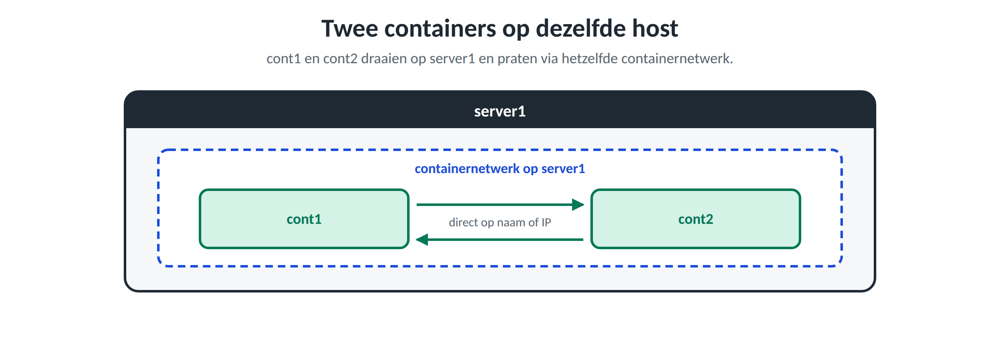
In dit scenario bevinden twee containers zich op dezelfde host en communiceren zij via een gedeeld netwerk, zoals een NAT-netwerk.
Voordelen:
-
Lage latentie omdat beide containers op dezelfde fysieke host draaien.
-
Eenvoudige configuratie doordat beide containers dezelfde netwerkomgeving delen.
Voorbeeldconfiguratie:
Stel, er zijn twee containers, Cont1 en Cont2, die draaien op server1.
5.3.3 Tweede mogelijkheid: een container communiceert met een externe service¶
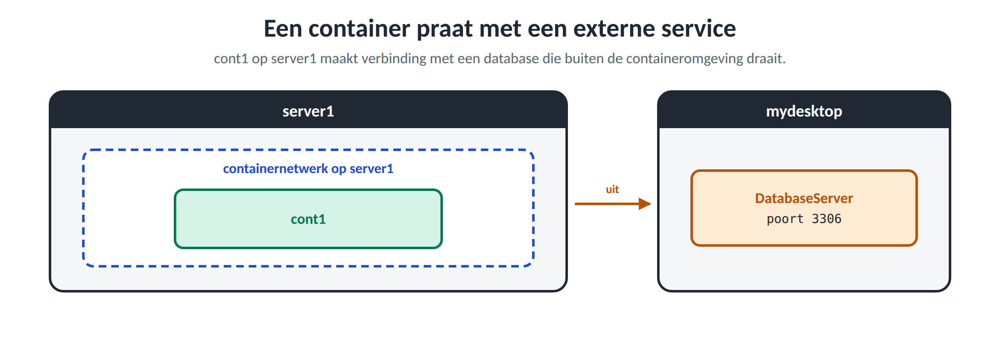
In dit scenario moet een container verbinding maken met een service buiten de containeromgeving, bijvoorbeeld een externe database of een API-service.
Voordelen:
-
Biedt de mogelijkheid om externe diensten te integreren in een containergebaseerde toepassing.
-
Flexibiliteit om containers te verbinden met verschillende externe services.
Voorbeeldconfiguratie:
Stel, Cont1 op Server1 moet verbinding maken met een externe database op DatabaseServer op mydesktop.
5.3.4 Derde mogelijkheid: een externe omgeving communiceert met een container¶
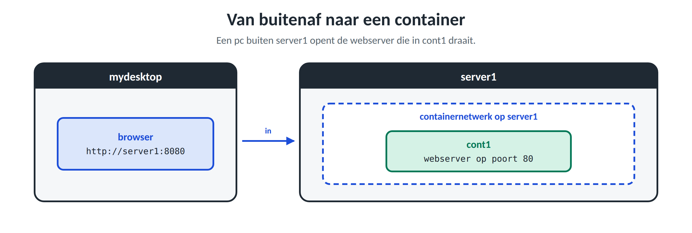
Hier moet een externe client, bijvoorbeeld een desktop-pc of een ander systeem, verbinding maken met een service die draait in een container, zoals een webapplicatie.
Voordelen:
-
Externe systemen kunnen gemakkelijk toegang krijgen tot de services binnen containers.
-
Maakt het mogelijk om containers te gebruiken als volwaardige servers voor externe gebruikers.
Voorbeeldconfiguratie:
Wanneer een externe gebruiker toegang wil krijgen tot een webserver die draait binnen Cont1.
5.3.5 Vierde mogelijkheid: communicatie tussen containers op verschillende hosts¶
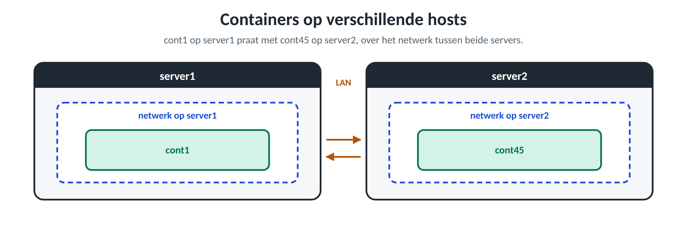
Dit scenario wordt gebruikt in een multi-server-omgeving, waarbij containers op verschillende hosts met elkaar moeten communiceren.
Voordelen:
-
Schaalbaarheid: meerdere hosts kunnen samen één logische netwerkomgeving creëren.
-
Netwerkvirtualisatie: containers op verschillende hosts kunnen eenvoudig communiceren zonder dat er complexe routering nodig is.
Voorbeeldconfiguratie:
Stel dat Cont1 op Server1 moet communiceren met Cont45 op Server2.
5.4 Rootless netwerktoegang¶
5.4.1 Vooraf¶
We zullen eerst alle Podman-containers te verwijderen om het overzicht te bewaren.
student@serverXX:~$ podman rm --all -f
…
student@serverXX:~$ sudo podman rm --all -f
Na het uitvoeren van deze stap kan je controleren of er geen containers meer aanwezig zijn door de lijst van containers weer te geven:
student@serverXX:~$ podman ps -a
CONTAINER ID IMAGE COMMAND CREATED STATUS PORTS NAMES
student@serverXX:~$ sudo podman ps -a
CONTAINER ID IMAGE COMMAND CREATED STATUS PORTS NAMES
5.4.2 Instellingen van Podman controleren¶
Rootless betekent dat de containers draaien zonder rootrechten op de host. Daarom gebruikt Podman speciale user-space tools: vroeger slirp4netns, nu pasta.
We checken eerst de versie van podman.
student@serverXX:~$ podman version
Client: Podman Engine
Version: 5.8.2
API Version: 5.8.2
Go Version: go1.26.5 (Red Hat 1.26.5-1.el10_2)
Git Commit: a476c2b2c35443a3db1a1668ac7b402eb1eb0619
Built: Fri Jul 10 02:00:00 2026
Build Origin: Red Hat, Inc. <http://bugzilla.redhat.com/bugzilla>
OS/Arch: linux/amd64
Met onderstaande kan je zien hoe podman geconfigureerd is betreffende het rootless netwerk.
student@serverXX:~$ podman info --debug | grep rootless
rootlessNetworkCmd: pasta
rootless: true
Wij gebruiken dus pasta voor rootless netwerken. Pasta is een high performance opvolger van slirp4netns.
5.4.3 Het standaard rootless netwerk¶
5.4.3.1 Communicatie tussen container en internet¶
Als je geen netwerk specifieert wordt de rootless-netwerkstack gebruikt.
We starten één container op.
student@serverXX:~$ podman run -d --name C1 --hostname C1 ubi10/ubi-init
c7761e4e2b17ae79f7dec2d5b332edc92cea9858ab8c743dac174d0f0f9587cd
We controleren of de container gestart is.
student@serverXX:~$ podman ps
CONTAINER ID IMAGE COMMAND …
c7761e4e2b17 registry.access.redhat.com/ubi10/ubi-init:latest /sbin/init …
We gaan in de container:
student@serverXX:~$ podman exec -it C1 bash
[root@C1 /]#
In de container installeren we essentiële netwerktools.
[root@C1 /]# dnf install -y iputils iproute curl
…
We zullen nu het netwerk testen.
We checken of je ICMP echo-packages met ping (in package iputils) kan sturen naar en ontvangen van www.google.be.
[root@C1 /]# ping -c 1 www.google.be
PING www.google.be (216.58.214.163) 56(84) bytes of data.
64 bytes from mad01s26-in-f3.1e100.net (216.58.214.163): icmp_seq=1 ttl=255 time=1.58 ms
--- www.google.be ping statistics ---
1 packets transmitted, 1 received, 0% packet loss, time 0ms
rtt min/avg/max/mdev = 1.583/1.583/1.583/0.000 ms
Met ip (in package iproute) checken we het IP-nummer.
[root@C1 /]# ip a
1: lo: <LOOPBACK,UP,LOWER_UP> mtu 65536 qdisc noqueue state UNKNOWN group default qlen 1000
…
2: ens160: <BROADCAST,MULTICAST,UP,LOWER_UP> mtu 65520 qdisc fq_codel state UNKNOWN group default qlen 1000
link/ether 06:89:97:11:96:f4 brd ff:ff:ff:ff:ff:ff
inet 192.168.112.100/24 brd 192.168.112.255 scope global noprefixroute ens160
valid_lft forever preferred_lft forever
inet6 fe80::489:97ff:fe11:96f4/64 scope link proto kernel_ll
valid_lft forever preferred_lft forever
De container ziet exact dezelfde netwerkkaart als de host: ens160 met het IP-adres 192.168.112.100. De container krijgt dus geen eigen netwerkkaart en geen eigen IP-adres, maar gebruikt rechtstreeks die van de host.
Met curl (in package curl) vragen we een webpagina op.
[root@C1 /]# curl www.google.be
<HTML><HEAD><meta http-equiv="content-type" content="text/html;charset=utf-8">
<TITLE>301 Moved</TITLE></HEAD><BODY>
<H1>301 Moved</H1>
The document has moved
<A HREF="http://www.google.com/">here</A>.
</BODY></HTML>
Zoals je ziet kan de container dus op internet enz. zonder specifiek instellingen hiervoor te hebben gedaan.
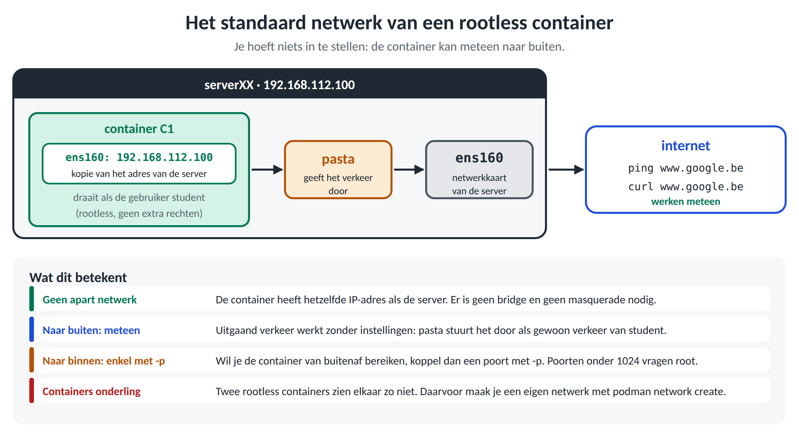
5.4.3.2 Communicatie tussen container en host¶
We gaan hiervoor eerst uit container.
[root@C1 /]# exit
exit
student@serverXX:~$
Installeer een webserver op je container host.
student@serverXX:~$ sudo dnf -y install httpd
We starten httpd.
student@serverXX:~$ sudo systemctl start httpd
Uiteraard is de website nu beschikbaar vanaf de container host.
student@serverXX:~$ curl 127.0.0.1
<!DOCTYPE html PUBLIC "-//W3C//DTD XHTML 1.1//EN" "http://www.w3.org/TR/xhtml11/DTD/xhtml11.dtd">
<html xmlns="http://www.w3.org/1999/xhtml" xml:lang="en">
…
De website is uiteraard beschikbaar vanaf ServerXX.
We gaan nu terug in de container.
student@serverXX:~$ podman exec -it C1 bash
We vragen nu de webpagina op.
[root@C1 /]# curl 127.0.0.1
curl: (7) Failed to connect to 127.0.0.1 port 80 after 0 ms: Could not connect to server
[root@C1 /]# curl 192.168.112.100
curl: (7) Failed to connect to 192.168.112.100 port 80 after 0 ms: Could not connect to server
[root@C1 /]# curl localhost
curl: (7) Failed to connect to localhost port 80 after 0 ms: Could not connect to server
Het is duidelijk dat een verbinding met de website op de host standaard niet werkt…
Pasta werkt standaard als volgt:
-
127.0.0.1 / localhost in de container
De loopback van de container zelf, dus niet de host. -
192.168.112.100
Pasta neemt het LAN-adres van de host over op de interface in de container. Binnen de container is dat dus een lokaal adres: maak je er een verbinding mee, dan kom je bij de container zelf terecht, niet bij de host.
Je kan dit oplossen door gebruik te maken van host.containers.internal.
[root@C1 /]# curl http://host.containers.internal
<!DOCTYPE html PUBLIC "-//W3C//DTD XHTML 1.1//EN" "http://www.w3.org/TR/xhtml11/DTD/xhtml11.dtd">
<html xmlns="http://www.w3.org/1999/xhtml" xml:lang="en">
…
Via host.containers.internal kan je altijd de host bereiken vanuit de container.
Het wordt vertaald naar een IP-adres via /etc/hosts.
[root@C1 /]# cat /etc/hosts
…
169.254.1.2 host.containers.internal host.docker.internal
…
Je ziet dat adres nergens op de host — en dat is de bedoeling. 169.254.1.2 bestaat niet als echt adres op een netwerkkaart van ServerXX. ip addr op de host toont het niet.
[root@C1 /]# exit
student@serverXX:~$ ip a
…Het is een verzonnen adres van pasta. Pasta onderschept binnen de netwerk-namespace van de container al het verkeer naar 169.254.1.2 en stuurt het door naar de loopback van de host (127.0.0.1)
Je kan ook de gateway van de host te gebruiken om vanuit de container verbinding te maken met de host.
student@serverXX:~$ podman run -d --network 'pasta:--map-gw' --name C2 --hostname C2 ubi10/ubi-init
Met de optie --map-gw zegt Podman tegen pasta:
“Met de optie --map-gw laat je pasta het gateway-adres opvangen: verkeer dat de container naar dat adres stuurt, komt terecht op de loopback van de host.”
We gaan in de container.
student@serverXX:~$ podman exec -it C2 bash
We maken nu verbinding met de webserver op de host door de IP-nummer van de gateway in te geven.
[root@C2 /]# curl 192.168.112.2
<!DOCTYPE html PUBLIC "-//W3C//DTD XHTML 1.1//EN" "http://www.w3.org/TR/xhtml11/DTD/xhtml11.dtd">
<html xmlns="http://www.w3.org/1999/xhtml" xml:lang="en">
…
Je kan ook een specifiek IP-adres instellen om verbinding te maken met de host.
student@serverXX:~$ podman run -d --network 'pasta:--map-host-loopback=11.11.11.11' --name C3 --hostname C3 ubi10/ubi-init
83756754ce2527c473c934897d269bba73c9d917f2cd9a0e0e13077ac40d308b
We gaan in de container.
student@serverXX:~$ podman exec -it C3 bash
We maken nu verbinding met de webserver op de host door de IP-nummer van de gateway in te geven.
student@serverXX:~$ podman exec -it C3 bash
[root@C3 /]# curl 11.11.11.11
<!DOCTYPE html PUBLIC "-//W3C//DTD XHTML 1.1//EN" "http://www.w3.org/TR/xhtml11/DTD/xhtml11.dtd">
<html xmlns="http://www.w3.org/1999/xhtml" xml:lang="en">
…
--map-host-loopback=11.11.11.11 = legt in pasta een vertaalregel vast: verkeer dat de container naar 11.11.11.11 stuurt, wordt omgeleid naar de loopback van de host (127.0.0.1). Er wordt geen extra IP-adres aangemaakt: het staat op geen enkele netwerkkaart en je ziet het niet met ip a.
Je kiest na “--map-host-loopback=” een IP-adres met volgende eisen:
-
Het mag nog niet in gebruik zijn op de host of in je LAN. Binnen de container wordt het immers gekaapt door pasta: staat er een echte machine op dat adres, dan is die vanuit de container niet meer bereikbaar.
-
Kies bij voorkeur een adres uit een gereserveerd bereik, zoals 192.0.2.0/24 of 169.254.0.0/16. Technisch aanvaardt pasta elk adres, maar zo sluit je een botsing met een bestaand adres uit.
-
Het adres bestaat nergens echt: het wordt niet toegevoegd aan een netwerkkaart en je ziet het dus niet met ip addr, ook niet in de container. Je kan het enkel als bestemming gebruiken.
Ga nu uit de container.
[root@C3 /]# exit
exit
Zet nu de webserver uit op ServerXX.
student@serverXX:~$ sudo systemctl stop httpd
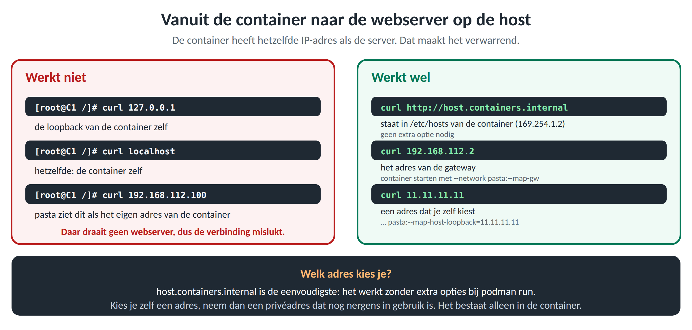
Terwijl C1, C2 en C3 draaien, vragen we op de host de netwerkinterfaces op.
student@serverXX:~$ ip a
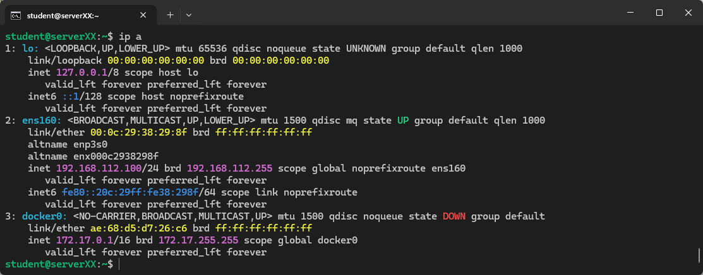
Je ziet er maar drie: lo, ens160 en docker0. Dat zijn exact dezelfde drie als voor je de containers startte. Er is dus niets bijgekomen.
Dat lijkt vreemd, want de containers hebben toch netwerk? De verklaring is dat Podman hier geen extra netwerkkaart op de host aanmaakt. Elke container krijgt zijn eigen, afgeschermde netwerk met daarin één netwerkkaart. Die heet ens160 en draagt het adres 192.168.112.100/24, net als op de host.
Het verkeer van die containers loopt via pasta. Voor elke container start Podman een pasta-proces op de host. Dat proces pikt het verkeer van de container op en stuurt het verder via ens160 van de host. Omdat pasta een gewoon programma is dat onder jouw gebruikersnaam draait, zijn er geen beheerdersrechten nodig en verandert er niets aan de host.
docker0 hoort hier niet bij. Die netwerkkaart maakt Docker aan bij het opstarten en blijft altijd staan, ook als er geen enkele container van Docker draait. Je ziet dat aan state DOWN: er hangt niets aan.
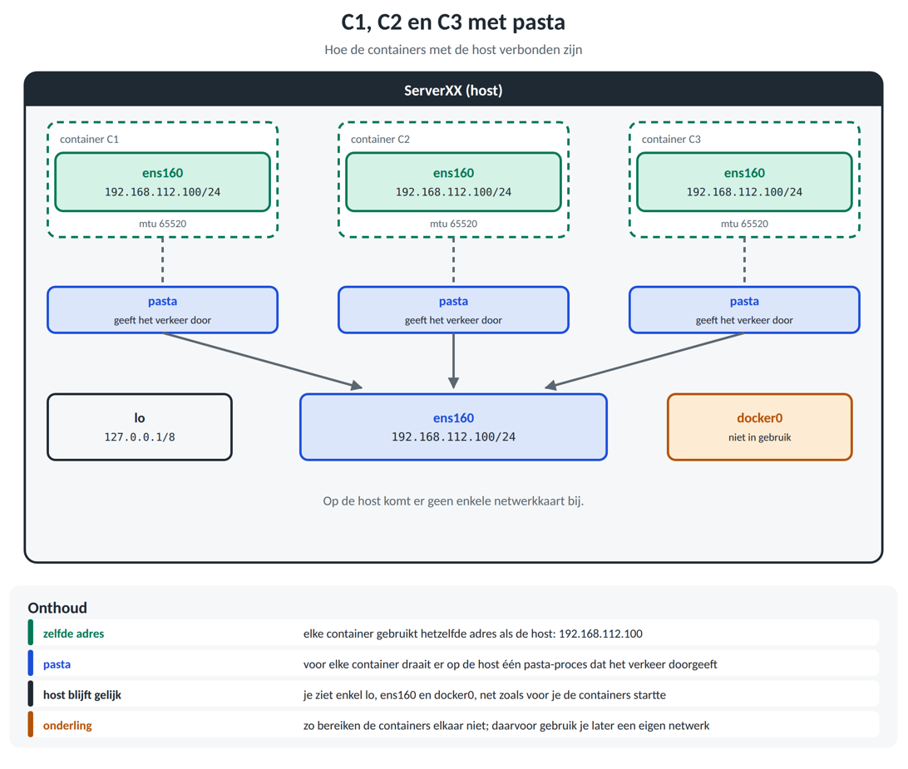
5.4.3.3 Communicatie van buitenaf naar een container¶
Vooraf¶
Verwijder nu alle containers.
student@serverXX:~$ podman rm --all -f
…
Vanaf de host¶
We zullen in dit hoofdstuk een alternatieve methode gebruiken om een webserver op UBI10 te installeren.
student@serverXX:~$ podman run -d --name myhttpd -p 8080:80 ubi10/ubi sh -c "dnf install -y httpd && httpd -D FOREGROUND"
222f4f4b35a473a9bdaaaea6f2f6706008791e306584e3957d5730b4f8957cdb
-d zorgt ervoor dat de container op de achtergrond draait.
--name myhttpd zorgt er uiteraard voor dat myhttpd de naam van de container is.
-p 8080:80 zorgt voor portmapping (hostpoort 8080 → containerpoort 80).
sh -c "...": Het commando sh -c wordt gestart om één of meerdere commando’s te starten.
dnf install -y httpd installeert de webserver.
&&: als de installatie succesvol is wordt de webserver gestart.
httpd -D FOREGROUND voert de webserver op de voorgrond uit .
student@serverXX:~$ podman ps
CONTAINER ID IMAGE COMMAND …
222f4f4b35a4 registry.access.redhat.com/ubi10/ubi:latest sh -c dnf install… …
Waarom moet -D FOREGROUND toegevoegd worden?
-
sh -c "..." wordt het PID 1 proces in de container (het eerste en hoofdproces).
- sh voert jouw hele commando-string uit.
-
Binnen dat sh -c gebeurt:
-
Eerst: dnf install -y httpd → dit installeert Apache.
-
Daarna, alleen als dat lukt, start httpd -D FOREGROUND.
-
-
Zodra httpd -D FOREGROUND draait, neemt httpd de rol over als het actieve proces.
Omdat het met -D FOREGROUND draait, blijft het proces actief op de voorgrond en blokkeert de shell. Dat zorgt ervoor dat de container niet meteen afsluit.
We kunnen nu checken of de container beschikbaar is vanaf de container host. Wacht wel even om onderstaand commando uit te voeren! De webserver moet immers geïnstalleerd en gestart worden.
student@serverXX:~$ curl 192.168.112.100:8080
<!DOCTYPE html PUBLIC "-//W3C//DTD XHTML 1.1//EN" "http://www.w3.org/TR/xhtml11/DTD/xhtml11.dtd">
<html xmlns="http://www.w3.org/1999/xhtml" xml:lang="en">
…
Op soortgelijke wijze kan je uiteraard andere poorten doorsturen maar, omdat je een gewone gebruiker bent, kan je standaard geen poorten mappen naar een poort op de host die kleiner dan 1024.
Er zijn mogelijkheden om dit te omzeilen maar sommige methodes zetten de beveiliging op losse schroeven. Die gaan we uiteraard niet gebruiken!
We tonen wel hoe je via de firewall toch poort 80 van de host naar de container krijgt. Ook hiervoor heb je rootrechten nodig.
We laten de firewall al het verkeer dat op de server zelf naar poort 80 vertrekt, omleiden naar poort 8080.
student@serverXX:~$ sudo firewall-cmd --direct --add-rule ipv4 nat OUTPUT 0 -p tcp --dport 80 -j REDIRECT --to-ports 8080 success--direct: je geeft de regel rechtstreeks door aan de onderliggende firewall, buiten het zonesysteem van firewalld om
ipv4: de regel geldt voor IPv4
nat: de tabel waarin adressen en poortnummers herschreven worden
OUTPUT: de keten voor verkeer dat op de host zelf vertrekt
0: de volgorde binnen die keten; hoe lager het getal, hoe vroeger de regel wordt toegepast
-p tcp --dport 80: de regel geldt enkel voor TCP-verkeer naar poort 80
-j REDIRECT --to-ports 8080: dat verkeer wordt omgeleid naar poort 8080 op dezelfde machine
Om het anders uit te leggen: de NAT-regel in de OUTPUT-keten grijpt in vóór de kernel het pakket verstuurt. De bestemming wordt herschreven van poort 80 naar poort 8080, op dezelfde host.
student@serverXX:~$ curl 192.168.112.100
<!DOCTYPE html PUBLIC "-//W3C//DTD XHTML 1.1//EN" "http://www.w3.org/TR/xhtml11/DTD/xhtml11.dtd">
<html xmlns="http://www.w3.org/1999/xhtml" xml:lang="en">
…
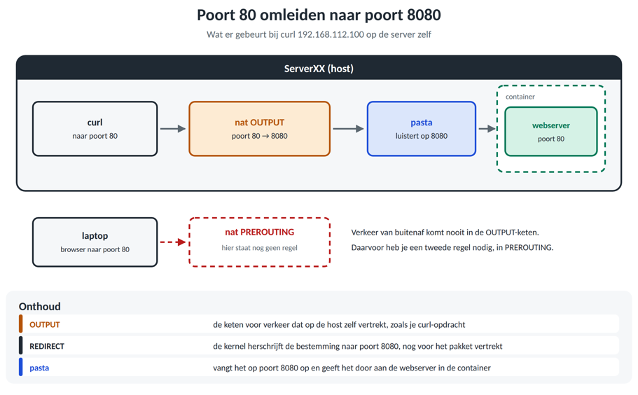
Vanaf een andere host¶
We willen nu dat je vanaf ClientXX verbinding kan maken met de webserver op ServerXX via poort 80. De vorige regel volstaat daarvoor niet: die zit in de keten OUTPUT en geldt enkel voor verkeer dat op ServerXX zelf vertrekt. Verkeer van ClientXX komt van buiten binnen en passeert de keten PREROUTING.
Stel daarom op ServerXX onderstaande regel in.
student@serverXX:~$ sudo firewall-cmd --direct --add-rule ipv4 nat PREROUTING 0 -p tcp --dport 80 -j DNAT --to-destination 192.168.112.100:8080
PREROUTING: de keten voor verkeer dat van buitenaf binnenkomt
-p tcp --dport 80: de regel geldt enkel voor TCP-verkeer naar poort 80
-j DNAT --to-destination 192.168.112.100:8080: de bestemming wordt herschreven naar poort 8080 op ServerXX zelf
Verkeer dat binnenkomt op poort 80 wordt herschreven naar 192.168.112.100:8080.
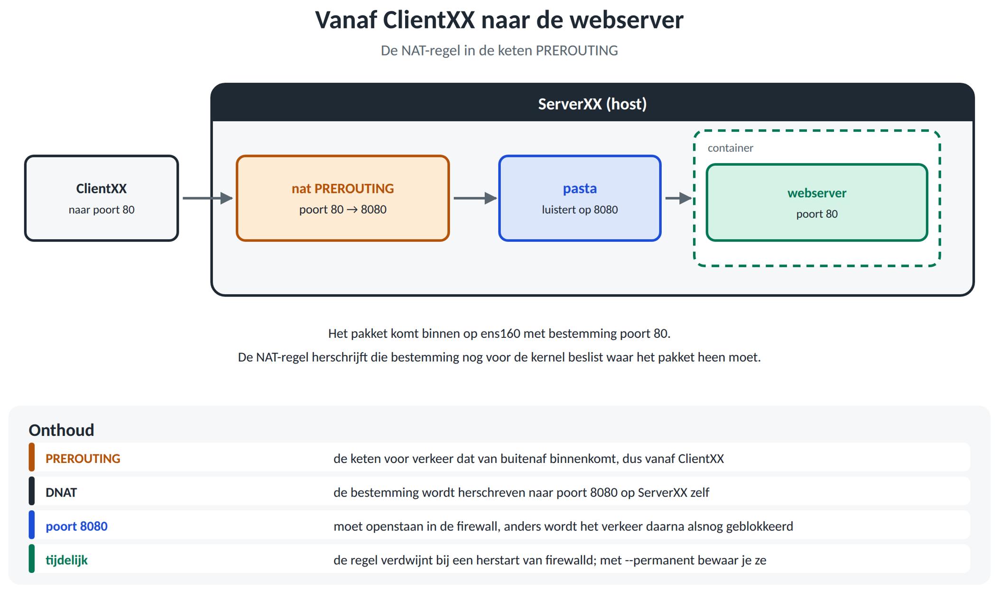
We kunnen nu op ClientXX verbinding maken met de webserver op ServerXX.
student@clientXX:~$ curl 192.168.112.100
<!DOCTYPE html PUBLIC "-//W3C//DTD XHTML 1.1//EN" "http://www.w3.org/TR/xhtml11/DTD/xhtml11.dtd">
<html xmlns="http://www.w3.org/1999/xhtml" xml:lang="en">
…
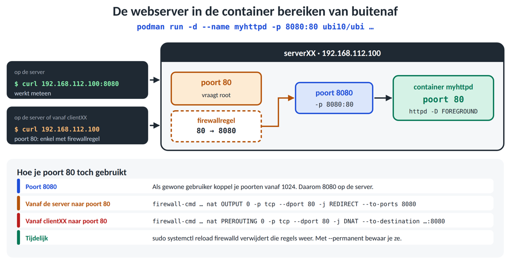
Hieronder vind je ter informatie een algemeen overzicht van de ketens van de firewall.
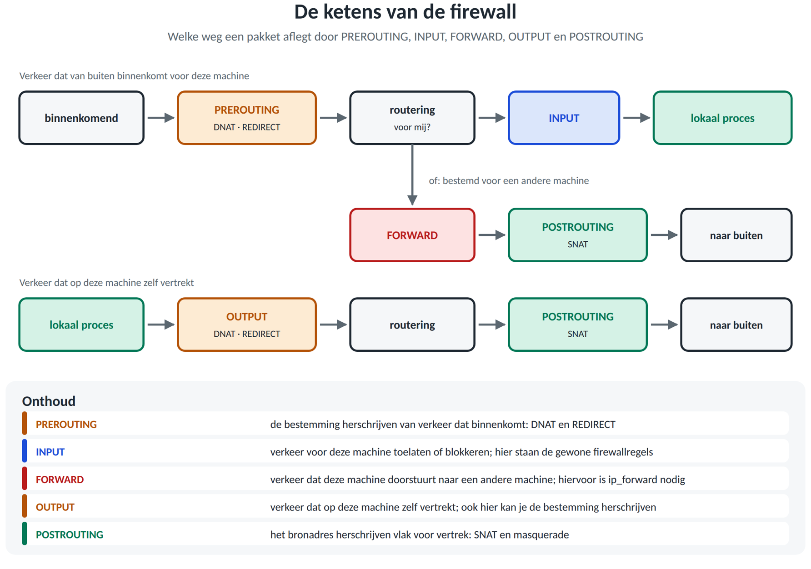
Wij hebben ons beperkt tot onderstaande.
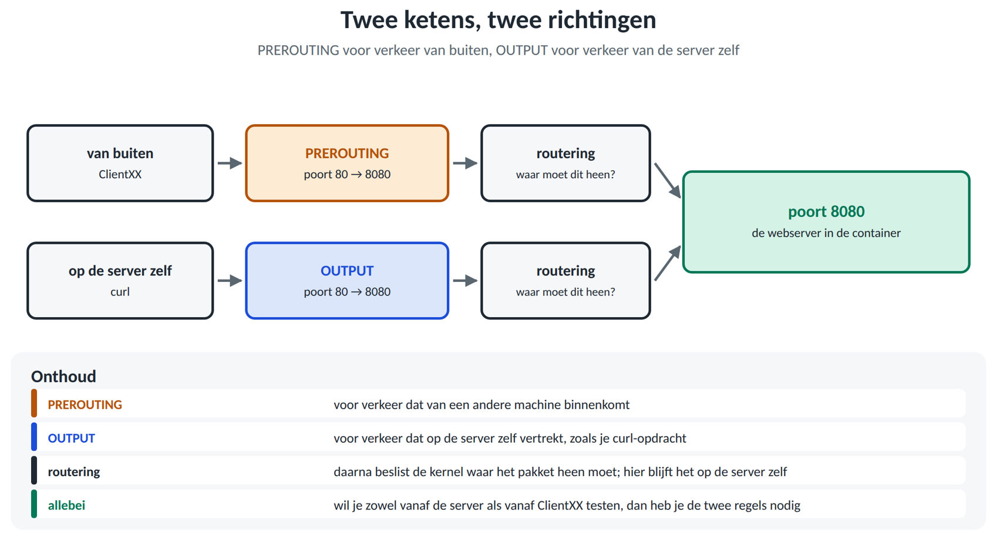
We verwijderen nu alle toegevoegde tijdelijke firewallregels door de firewall te herladen.
student@serverXX:~$ sudo systemctl reload firewalld
Uiteraard is er nu geen verbinding meer mogelijk vanaf ClientXX en is enkel verbinding mogelijk via poort 8080 op ServerXX.
student@clientXX:~$ curl 192.168.112.100
curl: (7) Failed to connect to 192.168.112.100 port 80 after 0 ms: Could not connect to server
student@serverXX:~$ curl 192.168.112.100:8080
<!DOCTYPE html PUBLIC "-//W3C//DTD XHTML 1.1//EN" "http://www.w3.org/TR/xhtml11/DTD/xhtml11.dtd">
…
5.4.3.4 Communicatie tussen twee containers¶
Hier bespreken we de eerste manier: je koppelt een poort van de host aan een poort in de container. Er bestaan nog andere manieren, maar die komen verderop aan bod.
Je draait nu onderstaande container nog.
podman run -d --name myhttpd -p 8080:80 ubi10/ubi sh -c "dnf install -y httpd && httpd -D FOREGROUND"
Omdat we de optie -p 8080:80 hebben gebruikt, wordt poort 8080 op de host door Podman doorgestuurd naar poort 80 in de container.
Je kan gebruik maken van host.container.internal in een andere container op dezelfde container host omdat de website beschikbaar is vanaf de host.
student@serverXX:~$ podman run --rm -it ubi10/ubi curl -v http://host.containers.internal:8080
<!DOCTYPE html PUBLIC "-//W3C//DTD XHTML 1.1//EN" "http://www.w3.org/TR/xhtml11/DTD/xhtml11.dtd">
<html xmlns="http://www.w3.org/1999/xhtml" xml:lang="en">
…
--rm: de container wordt definitief verwijderd na uitvoering.
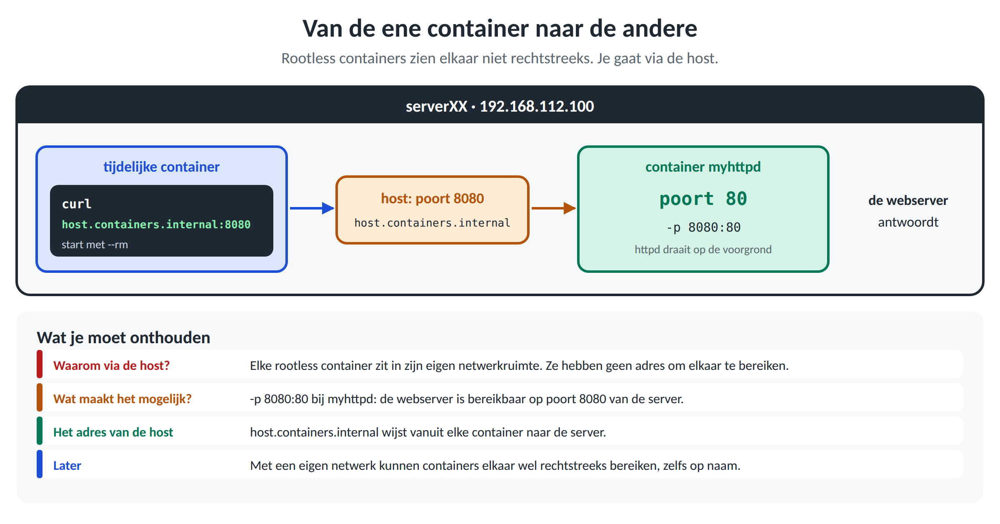
5.4.4 Een eigen netwerk aanmaken¶
5.4.4.1 Voorbeeld 1: eigen netwerk met een eigen subnet¶
Soms wil je zelf bepalen in welk subnet je containers terechtkomen, of wil je een container een vast IP-adres geven. Daarvoor maak je een eigen netwerk aan met podman network create. Bij die opdracht kies je zelf het subnet en het gateway-adres.
Maak een nieuw netwerk aan met onderstaande opdracht.
student@serverXX:~$ podman network create --subnet 192.168.5.0/24 --gateway 192.168.5.1 mynat
Uitleg:
-
podman network create: De opdracht om een nieuw Podman-netwerk aan te maken.
-
--subnet 192.168.5.0/24: Specificeert het subnet dat het nieuwe netwerk moet gebruiken.
-
--gateway 192.168.5.1: Stelt het gateway-adres in voor het netwerk.
-
mynat: De naam van het nieuwe netwerk dat wordt aangemaakt.
Controleer na het aanmaken van het netwerk of het correct is ingesteld met:
student@serverXX:~$ podman network ls
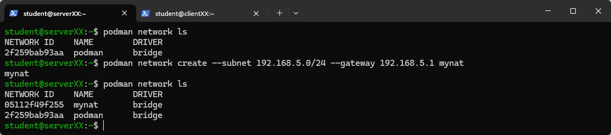
Als je gedetailleerde informatie wilt bekijken over het specifiek aangemaakte netwerk mynat, gebruik dan de volgende opdracht:
student@serverXX:~$ podman network inspect mynat
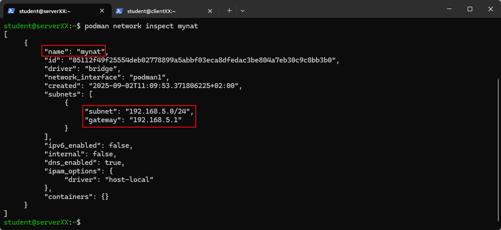
Verwijder de bestaande containers van gebruiker student.
student@serverXX:~$ podman rm --all -f
Voer de volgende opdrachten uit om de containers C1 en C2 aan te maken, en koppel ze aan het eerder aangemaakte mynat-netwerk met specifieke IP-adressen:
- Container C1 aanmaken met IP-adres 192.168.5.150:
student@serverXX:~$ podman run -d --name C1 --hostname C1 --network mynat --ip 192.168.5.150 ubi10/ubi-init
4b2747c0eb2fddfcb3b5263eb70668c8ca5f4f4cddb1203865b3132c770d6fef
- Container C2 aanmaken met IP-adres 192.168.5.151:
student@serverXX:~$ podman run -d --name C2 --hostname C2 --network mynat --ip 192.168.5.151 ubi10/ubi-init
90a401c67a1d63221925aa893690db03e54ecca4a1313234cdcf920f7510f4dc
We checken nu of de instellingen van C1 correct zijn. Gebruik de volgende opdracht om de Bash-interface te openen binnen container C1:
student@serverXX:~$ podman exec -it C1 bash
We voeren nu “ip a” uit.
[root@C1 /]# ip a
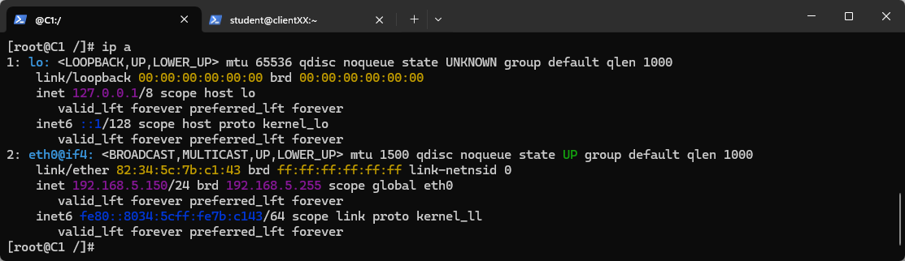
Je ziet hier eth0@if4.
-eth0 is interface van de container.
-@if4 is het andere uiteinde van de virtuele kabel: interface 4 in de namespace aan de overkant. Omdat we rootless werken, zit die namespace niet op de host en vind je dat uiteinde daar dus niet terug met ip a (zie verder).
We voeren nu ping uit na installatie iputils.
[root@C1 /]# dnf install -y iputils
[root@C1 /]# ping -c 1 C2
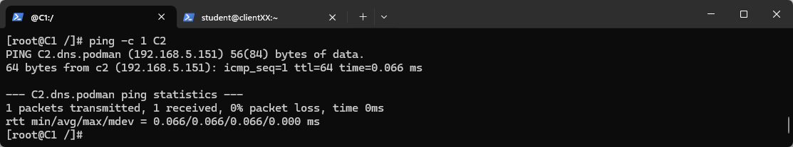
Je kan nu dus rechtstreeks communiceren tussen C1 en C2 met de naam en niet enkel met IP-adres.
We bekijken gateway in container.
[root@C1 /]# ip route
default via 192.168.5.1 dev eth0 proto static metric 100
192.168.5.0/24 dev eth0 proto kernel scope link src 192.168.5.150
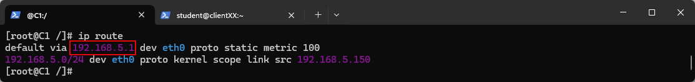
We bekijken nu de DNS-servers die gebruikt worden in de container.
[root@C1 /]# cat /etc/resolv.conf
search dns.podman
nameserver 192.168.5.1
Je kan op internet in de container.
[root@C1 /]# ping -c 1 www.google.be
PING www.google.be (216.58.214.163) 56(84) bytes of data.
64 bytes from mad01s26-in-f3.1e100.net (216.58.214.163): icmp_seq=1 ttl=254 time=25.5 ms
--- www.google.be ping statistics ---
1 packets transmitted, 1 received, 0% packet loss, time 0ms
rtt min/avg/max/mdev = 25.464/25.464/25.464/0.000 ms
Ga nu uit de container.
[root@C1 /]# exit
exit
Bij een rootless netwerk is er geen netwerkkaart op de host in het subnet van de container!
Als je docker hebt geïnstalleerd heb je wel docker0 maar dat heeft er niets mee te maken natuurlijk.
student@serverXX:~$ ip a
1: lo: <LOOPBACK,UP,LOWER_UP> mtu 65536 qdisc noqueue state UNKNOWN group default qlen 1000
link/loopback 00:00:00:00:00:00 brd 00:00:00:00:00:00
inet 127.0.0.1/8 scope host lo
valid_lft forever preferred_lft forever
inet6 ::1/128 scope host noprefixroute
valid_lft forever preferred_lft forever
2: ens160: <BROADCAST,MULTICAST,UP,LOWER_UP> mtu 1500 qdisc mq state UP group default qlen 1000
link/ether 00:0c:29:99:b5:3c brd ff:ff:ff:ff:ff:ff
altname enp3s0
altname enx000c2999b53c
inet 192.168.112.100/24 brd 192.168.112.255 scope global noprefixroute ens160
valid_lft forever preferred_lft forever
inet6 fe80::20c:29ff:fe99:b53c/64 scope link noprefixroute
valid_lft forever preferred_lft forever
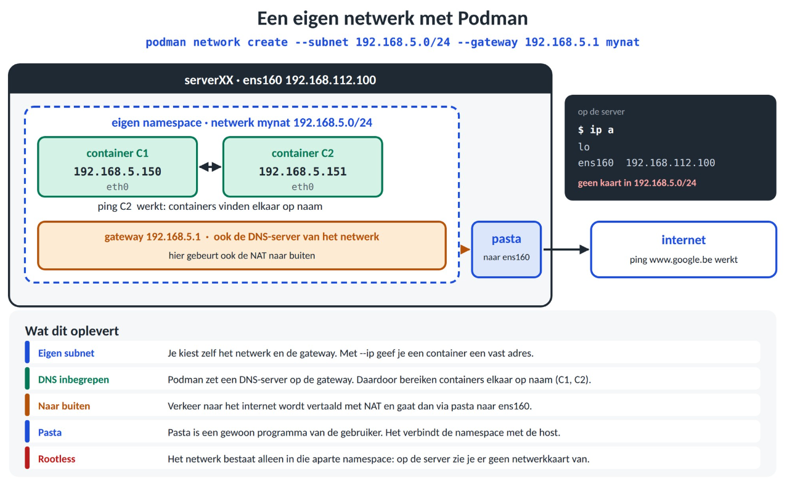
C1 en C2 hangen allebei aan dezelfde brug (switch), alleen staat die brug niet op de host maar in een aparte netwerk-namespace die Podman voor jouw gebruiker aanmaakt.
De opbouw:
-
in C1 zit eth0, het andere uiteinde is interface 4 in die namespace;
-
in C2 zit eth0, het andere uiteinde is interface 5 in diezelfde namespace;
De interfaces 4 en 5 zijn allebei veth-uiteinden die in de brug van het netwerk mynat geprikt zitten.
5.4.4.2 Voorbeeld 2: eigen netwerk met extra opties¶
Je kunt een Podman-netwerk aanmaken met extra opties, waarmee je aanvullende configuraties kunt opgeven.
De onderstaande opdracht maakt een nieuw NAT-netwerk aan met aangepaste DNS en gateway:
student@serverXX:~$ podman network create mynat2 --subnet 10.0.0.0/24 --gateway 10.0.0.1 --dns 10.0.0.4
mynat2
Extra netwerkopties:
--dns 10.0.0.4: Wijs een specifieke DNS-server toe (in dit voorbeeld 10.0.0.4).
--gateway 10.0.0.1: Dit stelt het gateway-adres van het netwerk in.
We listen nu terug de docker networks.
student@serverXX:~$ podman network ls
NETWORK ID NAME DRIVER
05112f49f255 mynat bridge
2ad4d1aed622 mynat2 bridge
2f259bab93aa podman bridge
Je kan, zoals je ziet, meerdere NAT-netwerken hebben ingesteld.
We gaan specifieke informatie opvragen over mynat2.
student@serverXX:~$ podman network inspect mynat2
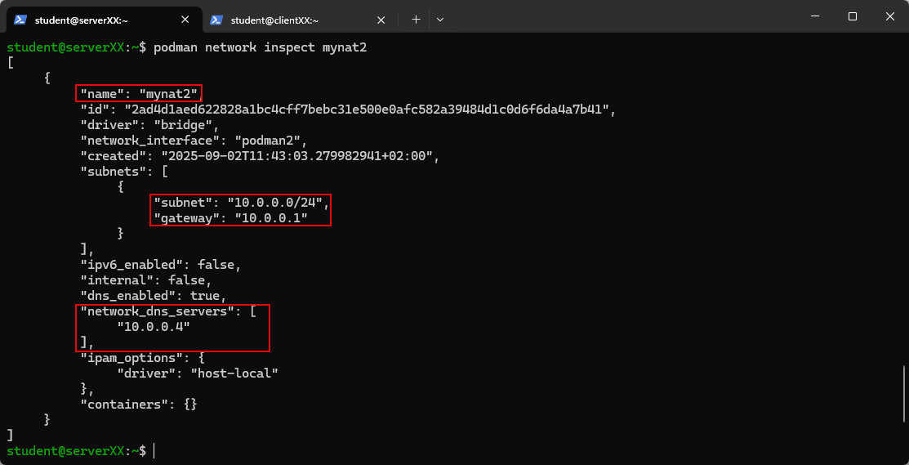
5.4.4.3 Een eigen netwerk verwijderen¶
We verwijderen het user-mode netwerk mynat2.
student@serverXX:~$ podman network rm mynat2
mynat2
5.4.4.4 Poorten publiceren bij een eigen netwerk¶
Een eigen netwerk schermt je containers af van de buitenwereld. De containers kunnen zelf wel naar buiten, want hun verkeer wordt vertaald met NAT. Omgekeerd werkt het niet: 192.168.5.0/24 is een privé-subnet dat enkel binnen dat netwerk bestaat, en van buitenaf is er geen weg naar die adressen toe.
Wil je een dienst in een container toch bereikbaar maken, dan moet je een poort publiceren, zoals je eerder geleerd hebt. Je koppelt dan een poort van de server aan een poort in de container.
Draait er bijvoorbeeld een webserver in een container, dan koppel je poort 8080 van de server aan poort 80 in de container. Houd er rekening mee dat je als gewone gebruiker enkel poorten vanaf 1024 kan koppelen. Wil je de dienst toch op poort 80 aanbieden, dan heb je de firewallregels nodig die we eerder besproken hebben.
Om dit te demonstreren vertrekken we vanuit het netwerk mynat.
student@serverXX:~$ podman network ls
NETWORK ID NAME DRIVER
05112f49f255 mynat bridge
2f259bab93aa podman bridge
We maken een nieuwe container genaamd myhttpd aan en deze verbinden met het mynat-netwerk, waarbij je poort 8080 van de host koppelt aan poort 80 van de container. Hierdoor wordt verkeer dat de host op poort 8080 bereikt, automatisch doorgestuurd naar de container.
student@serverXX:~$ podman run -d -it --name myhttpd -p 8080:80 --network mynat --ip 192.168.5.160 ubi10/ubi c9c1bd721f28f9a8e96d057b836aae8226eadca70753bcfee6c267b576fdfaa5-p 8080:80: Koppelt poort 8080 op de host aan poort 80 binnen de container. Verkeer dat de host bereikt op poort 8080, wordt doorgestuurd naar poort 80 van de container.
--ip 192.168.5.160: de container krijgt een specifiek IP-nummer
We installeren nu een webserver in de container.
student@serverXX:~$ podman exec -it myhttpd dnf install -y httpd
We checken het IP-adres in de container.
student@serverXX:~$ podman exec -it myhttpd ip a
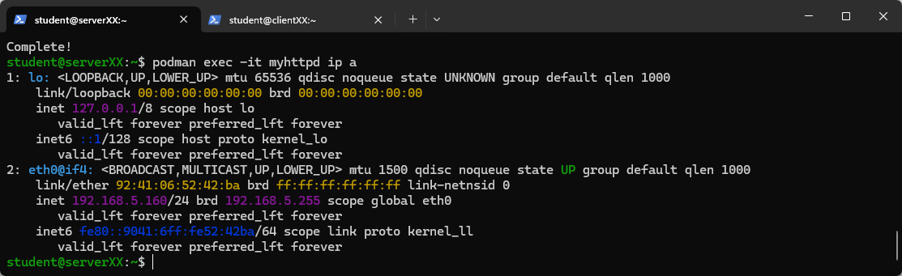
We starten nu de Apache webserver in de container.
student@serverXX:~$ podman exec -it myhttpd httpd
AH00558: httpd: Could not reliably determine the server's fully qualified domain name, using 192.168.5.160. Set the 'ServerName' directive globally to suppress this message
De container fungeert nu als een webserver. Poort 80 binnen de container (en dus op de host via de gepubliceerde poort 8080) is nu toegankelijk voor HTTP-verkeer.
Je hebt nu toegang tot de webserver op de containerhost.
student@serverXX:~$ curl 192.168.112.100:8080
<!DOCTYPE html PUBLIC "-//W3C//DTD XHTML 1.1//EN" "http://www.w3.org/TR/xhtml11/DTD/xhtml11.dtd">
<html xmlns="http://www.w3.org/1999/xhtml" xml:lang="en">
…
Als je meerdere containers wilt laten draaien die elk gebruik maken van poort 80 binnen de container, kun je verschillende poorten op de host koppelen aan poort 80 in elke container. Hierdoor kun je meerdere containers toegankelijk maken via verschillende poorten op de host, terwijl ze binnen de container nog steeds poort 80 gebruiken.
student@serverXX:~$ podman run -d --name myhttpd2 --publish 1234:80 ubi10/ubi sh -c "dnf install -y httpd && httpd -D FOREGROUND"
--publish 1234:80 of -p 1234:80 is hetzelfde
Hier installeer en start je onmiddellijk de webserver in de container.
Dit betekent dat je de webserver van myhttpd2 in de container kunt benaderen via http://<host-ip>:1234.
We checken dit (wacht wel even tot de webserver geïnstalleerd is en draait).
student@serverXX:~$ curl 192.168.112.100:1234
<!DOCTYPE html PUBLIC "-//W3C//DTD XHTML 1.1//EN" "http://www.w3.org/TR/xhtml11/DTD/xhtml11.dtd">
<html xmlns="http://www.w3.org/1999/xhtml" xml:lang="en">
…
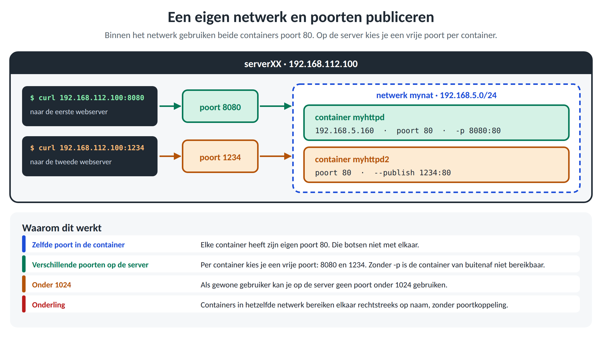
5.5 Rootful netwerktoegang¶
We zullen bestuderen of er een verschil is tussen rootful en rootless netwerk als je zelf geen netwerk specifieert.
We starten één container op als root.
student@serverXX:~$ sudo podman run -d --name C10 --hostname C10 ubi10/ubi-init
53eb6d6053e8735807fcf8a3a5137499b97dd6f22cfa560324db0bfd877004f1
We gaan in de container:
student@serverXX:~$ sudo podman exec -it C10 bash
[root@C10 /]#
In de container installeren we essentiële netwerktools.
[root@C10 /]# dnf install -y iputils iproute curl
…
We zullen nu testen hetgeen mogelijk is in de container.
We checken of je ICMP echo-packages met ping (in package iputils) kan sturen naar en ontvangen van www.google.be.
[root@C10 /]# ping -c 1 www.google.be
PING www.google.be (216.58.214.163) 56(84) bytes of data.
64 bytes from mad01s26-in-f3.1e100.net (216.58.214.163): icmp_seq=1 ttl=255 time=1.58 ms
--- www.google.be ping statistics ---
1 packets transmitted, 1 received, 0% packet loss, time 0ms
rtt min/avg/max/mdev = 1.583/1.583/1.583/0.000 ms
Met curl (in package curl) vragen we een webpagina op.
[root@C1 /]# curl www.google.be
<HTML><HEAD><meta http-equiv="content-type" content="text/html;charset=utf-8">
<TITLE>301 Moved</TITLE></HEAD><BODY>
<H1>301 Moved</H1>
The document has moved
<A HREF="http://www.google.com/">here</A>.
</BODY></HTML>
Zoals je ziet kan de container dus op internet zonder specifiek instellingen hiervoor te hebben gedaan.
Met ip (in package iproute) checken we het IP-nummer.
[root@C10 /]# ip a
1: lo: <LOOPBACK,UP,LOWER_UP> mtu 65536 qdisc noqueue state UNKNOWN group default qlen 1000
link/loopback 00:00:00:00:00:00 brd 00:00:00:00:00:00
inet 127.0.0.1/8 scope host lo
valid_lft forever preferred_lft forever
inet6 ::1/128 scope host proto kernel_lo
valid_lft forever preferred_lft forever
2: eth0@if4: <BROADCAST,MULTICAST,UP,LOWER_UP> mtu 1500 qdisc noqueue state UP group default qlen 1000
link/ether f6:84:42:67:fa:a7 brd ff:ff:ff:ff:ff:ff link-netnsid 0
inet 10.88.0.2/16 brd 10.88.255.255 scope global eth0
valid_lft forever preferred_lft forever
inet6 fe80::f484:42ff:fe67:faa7/64 scope link proto kernel_ll
valid_lft forever preferred_lft forever
[root@C10 /]# exit
exit
In tegenstelling tot bij rootless netwerktoegang krijgt je container wel een eigen IP-nummer. In dit geval is dat 10.88.0.2.
Dat komt doordat een rootful container standaard op het brugnetwerk podman terechtkomt. Podman legt die brug aan op de host zelf en geeft de container een adres uit 10.88.0.0/16. Rootless gebruikt standaard pasta, en dan is er geen brug en geen apart adres: de container deelt het adres van de host.
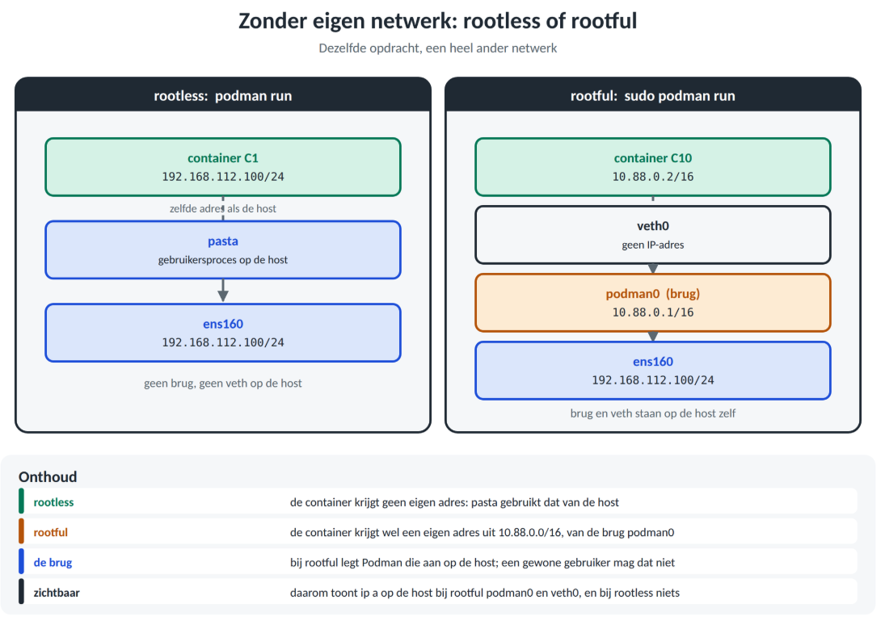
Er wordt gebruik gemaakt van het standaard podman netwerk aangezien we geen netwerk gespecifieerd hebben.
student@serverXX:~$ sudo podman network ls
NETWORK ID NAME DRIVER
2f259bab93aa podman bridge
We inspecteren nu het podman-netwerk.
student@serverXX:~$ sudo podman network inspect podman
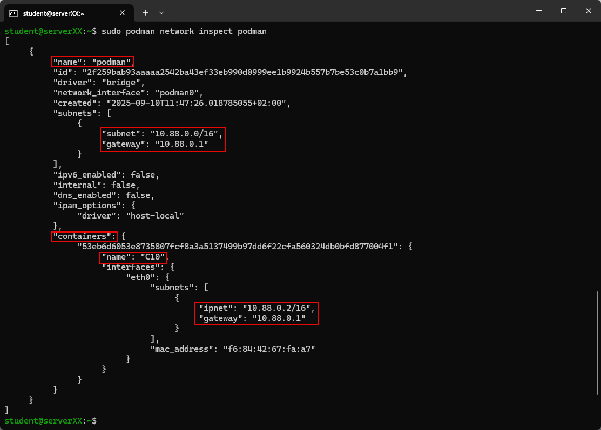
Je ziet hier ook de netwerkinstellingen van de draaiende container C10.
We bekijken nu de IP-instellingen op de container host ServerXX.
student@serverXX:~$ ip a
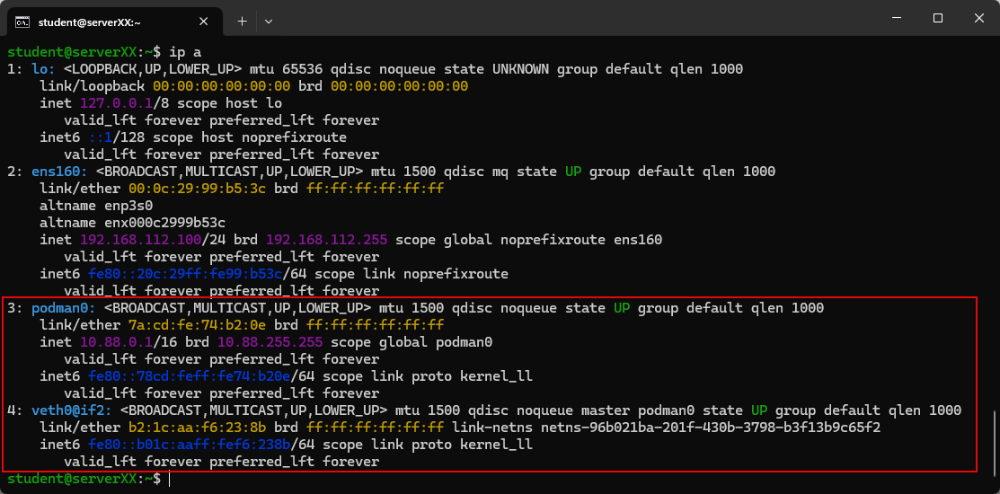
podman0 is de virtuele bridge, oftewel de switch van het netwerk. Het gateway-adres 10.88.0.1 staat op die bridge.
veth0@if2 is de hostkant van de virtuele ethernetkabel tussen de bridge en container C10. Het is een poort op de switch en werkt op laag 2, en daarom heeft die interface zelf geen IP-adres. De andere kant van de kabel, eth0@if4, zit in de container en draagt wel een adres: 10.88.0.2.
De nummers verwijzen naar elkaar: veth0@if2 wijst naar interface 2 in de container, en eth0@if4 wijst naar interface 4 op de host.
Hieronder zie je een schema van de situatie.
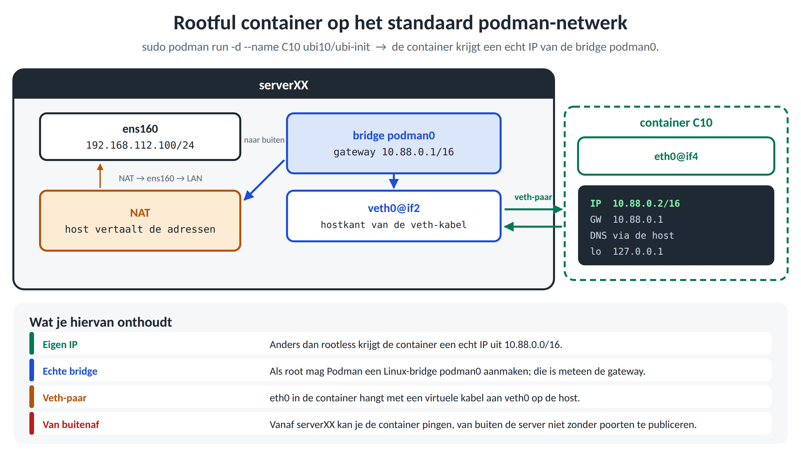
Hoe het werkt…
-
Container C10 stuurt verkeer → eth0@if4 → veth-paar → veth0@if2 op de host → bridge podman0.
-
Moet het verkeer naar het internet, dan gaat het via het gateway-adres 10.88.0.1 op de bridge. De host routeert het pakket en vervangt het afzenderadres door 192.168.112.100 van ens160. Die vertaling heet NAT, en gebeurt in de keten POSTROUTING.
-
Andere containers in hetzelfde netwerk krijgen elk een eigen veth naar podman0. Zij praten rechtstreeks met elkaar over de bridge, zonder dat er gerouteerd of vertaald wordt.
Hieronder vind je een algemener schema hierover.
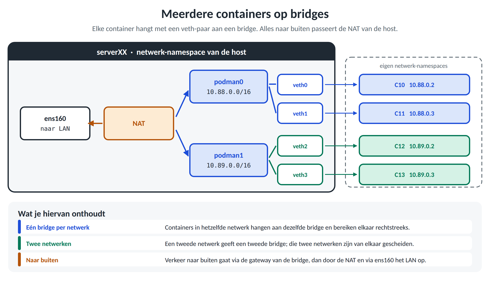
Vanuit de container host kan je nu dus rechtstreeks ICMP-pakketten sturen naar de container.
student@serverXX:~$ ping -c 1 10.88.0.2
PING 10.88.0.2 (10.88.0.2) 56(84) bytes of data.
64 bytes from 10.88.0.2: icmp_seq=1 ttl=64 time=0.087 ms
--- 10.88.0.2 ping statistics ---
1 packets transmitted, 1 received, 0% packet loss, time 0ms
rtt min/avg/max/mdev = 0.087/0.087/0.087/0.000 ms
Zonder poorten te publiceren is de container enkel vanaf de host zelf bereikbaar, niet vanaf een andere machine. Dat is logisch: het subnet 10.88.0.0/16 bestaat alleen op deze server. ClientXX kent die adressen niet en heeft er geen route naartoe. Wil je een dienst in de container toch van buitenaf bereikbaar maken, dan moet je een poort van de server koppelen aan een poort in de container.
Je kan, omdat je root bent, nu ook poorten publiceren kleiner dat 1024.
We zullen de standaardpoort 80 gebruiken. Stop dus, indien ingesteld, de webserver die draait op ServerXX zelf.
student@serverXX:~$ sudo systemctl stop httpd
Hier een voorbeeld.
student@serverXX:~$ sudo podman run -d --name myhttpd10 --publish 80:80 ubi10/ubi sh -c "dnf install -y httpd && httpd -D FOREGROUND"
19038ae548760cf6c978eb422641d2514974a40ef849020a221d7f9372b4aacc
Je kan de website nu niet enkel bereiken via het IP-nummer van de container maar ook via 192.168.112.100 (wacht weer even voordat je het uitvoert!):
student@serverXX:~$ curl 192.168.112.100
<!DOCTYPE html PUBLIC "-//W3C//DTD XHTML 1.1//EN" "http://www.w3.org/TR/xhtml11/DTD/xhtml11.dtd">
<html xmlns="http://www.w3.org/1999/xhtml" xml:lang="en">
…
Je kan nu deze website beschikbaar maken via het netwerk.
5.6 Standaard rootless en rootful netwerken vergeleken¶
Hieronder vergelijken we de standaardsituatie van beide: een rootful container op het bridge-netwerk podman, en een rootless container met pasta.
| Eigenschap | Rootful (sudo podman) | Rootless (podman) |
|---|---|---|
| Standaardnetwerk | bridge podman0 | pasta (user-space) |
| Adres van de container | eigen adres uit 10.88.0.0/16 | geen eigen adres: dat van de host |
| Zichtbaar op de host | podman0 en een veth per container | niets |
| Bereikbaar vanaf de host | ja, rechtstreeks op 10.88.0.x | enkel via een gepubliceerde poort |
| Bereikbaar van buitenaf | enkel via een gepubliceerde poort | enkel via een gepubliceerde poort |
| Poorten onder 1024 | mogelijk | niet mogelijk |
| Rechten | processen draaien als root op de host | processen draaien als jouw gebruiker |
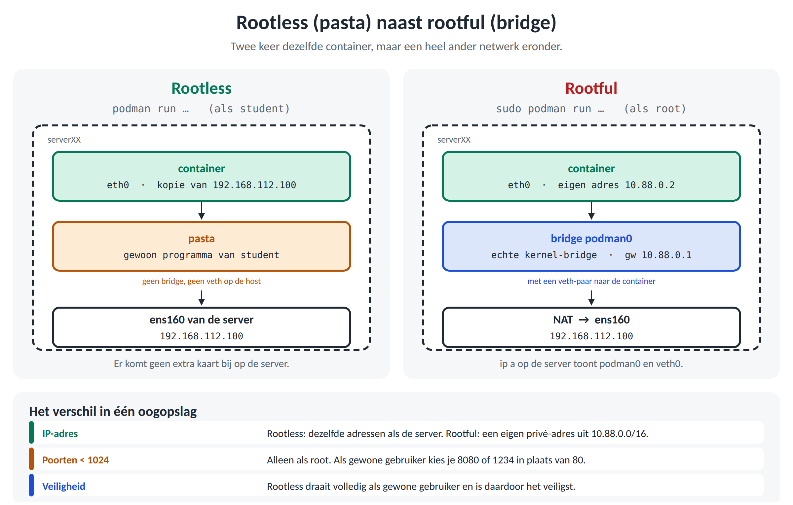
5.7 Netwerkmodi¶
Er zijn verschillende netwerkmodi beschikbaar zijn voor Podman.
We hebben volgende al besproken:
-
Bridge
De standaard voor rootful containers, en ook wat je krijgt wanneer je zelf een netwerk aanmaakt met podman network create, rootful én rootless.
Rootless staat die brug dan niet op de host, maar in een aparte namespace. -
Pasta
De standaard voor rootless containers.
Daarnaast heb je nog volgende modi:
-
Host (rootful en rootless)
Apps die alle netwerken van de host moeten zien, debugging. -
None (rootful en rootless)
Maximale isolatie, geen netwerk nodig. -
Macvlan (enkel rootful)
Containers zichtbaar als aparte hosts op fysiek LAN. -
Ipvlan (enkel rootful)
Zelfde als macvlan, maar zonder extra MAC’s in LAN.
De modus Bridge is voldoende voor de meeste situaties en hebben we reeds besproken maar we bespreken ook de andere modi.
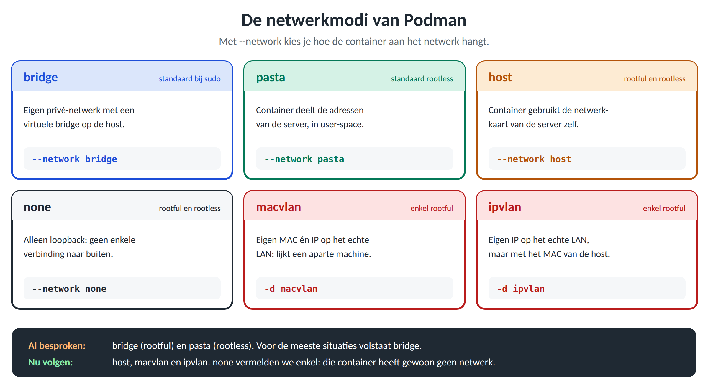
5.8 Host-netwerk¶
Verwijder eerst alle containers, zowel die van student als die van root.
student@serverXX:~$ podman rm --all -f; sudo podman rm --all -f
…
Verwijder ook de netwerken die je zelf hebt aangemaakt. Met -f sla je de bevestigingsvraag over.
student@serverXX:~$ podman network prune; sudo podman network prune
WARNING! This will remove all networks not used by at least one container.
Are you sure you want to continue? [y/N] y
WARNING! This will remove all networks not used by at least one container.
Are you sure you want to continue? [y/N] y
Het standaardnetwerk podman blijft staan: dat kan je niet verwijderen.
student@serverXX:~$ sudo podman network ls
NETWORK ID NAME DRIVER
2f259bab93aa podman bridge
We starten een webserver die het netwerk van de host gebruikt.
student@serverXX:~$ sudo podman run -d --name myhttpd --network host ubi10/ubi sh -c "dnf install -y httpd && httpd -D FOREGROUND"
b22d49742ecddd2bcb59390f5b5c7d82eea76a2723ea77f1305b32bd7866128e
De container installeert eerst httpd en start die daarna op de voorgrond. Dat duurt even. Volg desnoods de voortgang met sudo podman logs -f myhttpd.
We vragen het IP-adres van de container op.
student@serverXX:~$ sudo podman exec myhttpd ip addr show
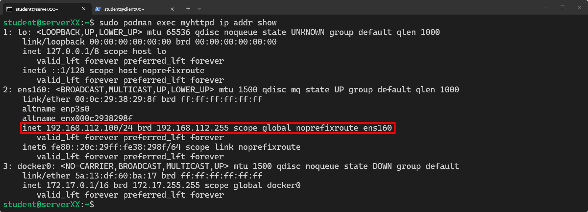
Je ziet exact dezelfde netwerkkaarten als op de host, met hetzelfde IP-adres. De container heeft geen eigen netwerk gekregen, maar gebruikt dat van de server.
Toegang testen vanuit ServerXX.
student@serverXX:~$ curl localhost
<!DOCTYPE html PUBLIC "-//W3C//DTD XHTML 1.1//EN" "http://www.w3.org/TR/xhtml11/DTD/xhtml11.dtd">
<html xmlns="http://www.w3.org/1999/xhtml" xml:lang="en">
…
De webserver luistert rechtstreeks op poort 80 van de host. Je hebt dus geen -p nodig en geen firewallregel.
Probeer het daarna vanuit een tweede container, die ook het host-netwerk gebruikt.
student@serverXX:~$ podman run --rm --network host ubi10/ubi curl http://localhost
…
<html xmlns="http://www.w3.org/1999/xhtml" xml:lang="en">
<head>
<title>Test Page for the HTTP Server on Red Hat Enterprise Linux</title>
…
--network host: Met deze optie wordt deze container uitgevoerd in het netwerk van de host.
Ook dat werkt: beide containers en de host delen dezelfde netwerkstack, dus localhost verwijst voor alle drie naar hetzelfde.
Met de optie --network host draait de container in het netwerk van de host. Dat heeft twee gevolgen.
-
Hetzelfde IP-adres als de host. De container krijgt geen eigen netwerk en dus ook geen eigen adres.
-
Poorten moeten vrij zijn. Omdat de container dezelfde netwerkstack gebruikt, deelt ze ook de poorten. Draait er in de container een webserver op poort 80, dan moet poort 80 op de host nog vrij zijn. Een tweede container met hetzelfde host-netwerk kan die poort niet nog eens innemen.
Rootless werkt het host-netwerk technisch gezien ook, maar je hebt er weinig aan. De beperking op poorten onder 1024 blijft namelijk gelden: die zit in de kernel en verdwijnt niet door het host-netwerk te gebruiken.
Stel dat je onderstaande uitvoert:
student@serverXX:~$ podman run -d --name myhttpd --network host ubi10/ubi sh -c "dnf install -y httpd && httpd -D FOREGROUND"
Je zal merken dat de container binnen de minuut stopt omdat hij poort 80 probeert te binden op de host en dat mag niet. Daardoor stop httpd en eindigt de container. We gaan daar verder niet op in.
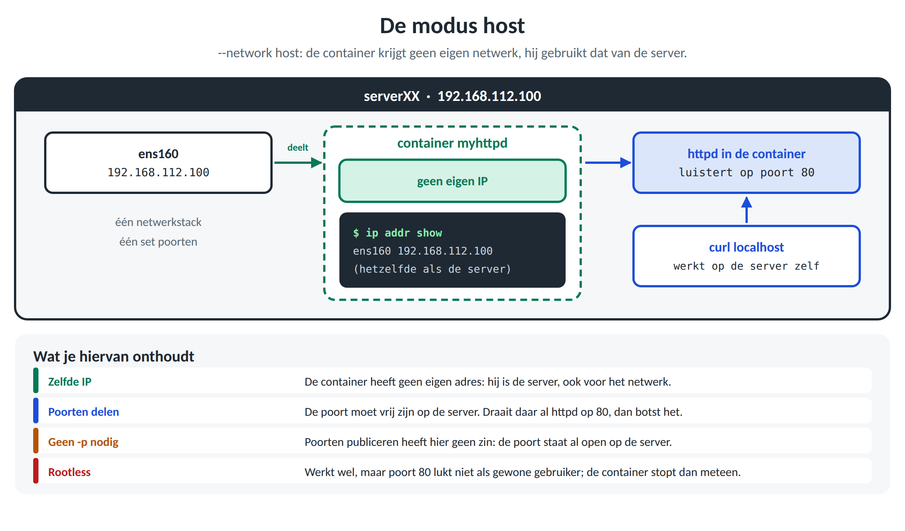
5.9 Macvlan-netwerk¶
5.9.1 Inleiding¶
Een macvlan-netwerk geeft elke container een eigen MAC-adres en een eigen IP-adres rechtstreeks in het fysieke LAN van de host. Macvlan werkt op laag 2: de container hangt als het ware met een eigen netwerkkaart aan dezelfde switch als de host. Voor de rest van het netwerk lijkt ze dus een gewone machine.
5.9.2 Macvlan-netwerk aanmaken¶
We verwijderen eerst alle containers en netwerken.
student@serverXX:~$ podman rm --all -f; sudo podman rm --all -f
…
student@serverXX:~$ podman network prune; sudo podman network prune
WARNING! This will remove all networks not used by at least one container.
Are you sure you want to continue? [y/N] y
WARNING! This will remove all networks not used by at least one container.
Are you sure you want to continue? [y/N] y
Een macvlan-netwerk hangt vast aan een bestaande netwerkkaart van de server. We vragen daarom eerst op welke kaarten er zijn.
student@serverXX:~$ nmcli connection show
NAME UUID TYPE DEVICE
ens160 2318b781-c803-36d2-8642-bb3d5bb513f9 ethernet ens160
lo 671960ae-dbe0-4275-a4c1-86fa77dc9a33 loopback lo
Van ens160 hebben we het IP-adres, de DNS-server en de gateway nodig.
student@serverXX:~$ nmcli connection show ens160 | grep ipv4.addresses
ipv4.addresses: 192.168.112.100/24
student@serverXX:~$ nmcli connection show ens160 | grep ipv4.dns
ipv4.dns: 192.168.112.2
…
student@serverXX:~$ nmcli connection show ens160 | grep ipv4.gateway
ipv4.gateway: 192.168.112.2
Nu maken we een macvlan netwerk aan:
student@serverXX:~$ sudo podman network create -d macvlan --subnet 192.168.112.0/24 --gateway 192.168.112.2 -o parent=ens160 macvlan_netwerk
macvlan_netwerk
-d macvlan: we gebruiken de macvlan-driver in plaats van de standaarddriver bridge.
--subnet en --gateway: dezelfde waarden als die van de host, want de containers komen in hetzelfde LAN terecht.
-o parent=ens160: de netwerkkaart waaraan het macvlan-netwerk vasthangt.
Controleer dat het netwerk is aangemaakt.
student@serverXX:~$ sudo podman network ls
NETWORK ID NAME DRIVER
f4edbfe1f57f macvlan_netwerk macvlan
2f259bab93aa podman bridge
5.9.3 Container met een macvlan-netwerk¶
We starten een container die van dat netwerk gebruikmaakt. Omdat de container in het echte LAN terechtkomt, kiezen we zelf een vrij adres dat niet door de DHCP-server wordt uitgedeeld.
student@serverXX:~$ sudo podman run --detach -it --name contiis3 --hostname contiis3 --network macvlan_netwerk --ip 192.168.112.80 ubi10/ubi
5436fa022928ba4e4bafbe9d4c5411ce0e9d86bc19d7bfd7416501a294dbccdd
We gaan nu naar bash in de container.
student@serverXX:~$ sudo podman exec -it contiis3 bash
We checken nu IP, DNS en gateway.
[root@contiis3 /]# ip a
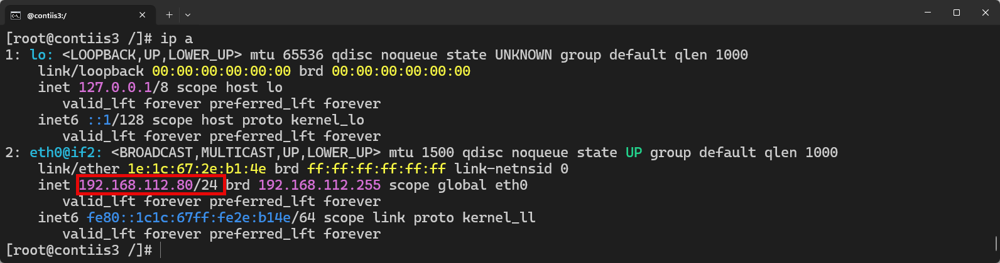
[root@contiis3 /]# ip route
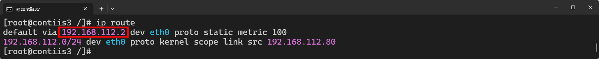
[root@contiis3 /]# cat /etc/resolv.conf
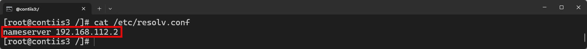
We testen de verbinding met het internet. Daarvoor installeren we eerst iputils.
[root@contiis3 /]# dnf install -y iputils
[root@contiis3 /]# ping -c 1 www.google.be
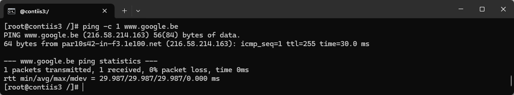
We installeren in de container een webserver.
[root@contiis3 /]# dnf install -y httpd
We starten httpd, controleren of hij antwoordt en verlaten de container.
[root@contiis3 /]# httpd
AH00558: httpd: Could not reliably determine the server's fully qualified domain name, using 192.168.112.80. Set the 'ServerName' directive globally to suppress this message
[root@contiis3 /]# curl 192.168.112.80
<!DOCTYPE html PUBLIC "-//W3C//DTD XHTML 1.1//EN" "http://www.w3.org/TR/xhtml11/DTD/xhtml11.dtd">
<html xmlns="http://www.w3.org/1999/xhtml" xml:lang="en">
…
[root@contiis3 /]# exit
exit
Open nu een browser op je eigen computer en surf naar http://192.168.112.80. Je krijgt de testpagina van de webserver te zien.
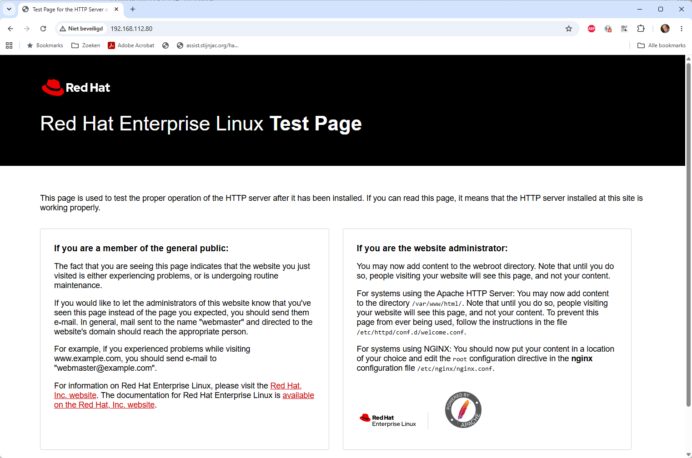
Containers in hetzelfde macvlan-netwerk bereiken elkaar eveneens rechtstreeks. We starten er een tweede.
We starten hiervoor eerste een tweede container op.
student@serverXX:~$ sudo podman run --detach -it --name containerX --hostname containerX --network macvlan_netwerk --ip 192.168.112.81 ubi10/ubi
2d3ca600b60819a3addf22d67d3fe350fd8b160c1c226899bc8a774fa695a72d
We gaan nu naar de tweede container.
student@serverXX:~$ sudo podman exec -it containerX bash
Installeer nu curl en vraag de webpagina op.
[root@containerX /]# dnf install -y curl
[root@containerX /]# curl http://192.168.112.80
<!DOCTYPE html PUBLIC "-//W3C//DTD XHTML 1.1//EN" "http://www.w3.org/TR/xhtml11/DTD/xhtml11.dtd">
<html xmlns="http://www.w3.org/1999/xhtml" xml:lang="en">
…
Verlaat nu de container.
[root@containerY /]# exit
exit
5.9.4 Scheiding met de host¶
Bij macvlan, en ook bij ipvlan, krijgt de container een eigen adres rechtstreeks op het fysieke netwerk. Er komt geen brug op de host aan te pas: het verkeer van de container gaat meteen de netwerkkaart uit, het netwerk op.
Daar zit meteen de beperking. Een macvlan-interface mag wel praten met andere machines op het netwerk en met andere macvlan-interfaces, maar nooit met de netwerkkaart waaraan ze vasthangt. De host en zijn eigen containers kunnen elkaar dus niet bereiken, ook al zitten ze in hetzelfde subnet.
Je merkt dat meteen: vanaf ServerXX krijg je geen antwoord van de container.
student@serverXX:~$ ping -c 1 192.168.112.80
PING 192.168.112.80 (192.168.112.80) 56(84) bytes of data.
From 192.168.112.100 icmp_seq=1 Destination Host Unreachable
--- 192.168.112.80 ping statistics ---
1 packets transmitted, 0 received, +1 errors, 100% packet loss, time 0ms
student@serverXX:~$ curl 192.168.112.80
curl: (7) Failed to connect to 192.168.112.80 port 80 after 3107 ms: Could not connect to server
Wil je de container toch bereiken vanaf de host, dan maak je op de host zelf ook een macvlan-interface aan. Twee macvlan-interfaces op dezelfde kaart mogen immers wél met elkaar praten. Houd er rekening mee dat je daarmee de scheiding doorbreekt die macvlan je net oplevert.
Maak een macvlan-subinterface op de host:
student@serverXX:~$ sudo ip link add macvlan_host link ens160 type macvlan mode bridge
Geef de nieuwe interface een IP-adres in hetzelfde subnet als het macvlan-netwerk:
student@serverXX:~$ sudo ip addr add 192.168.112.22/24 dev macvlan_host
Activeer nu de nieuwe interface.
student@serverXX:~$ sudo ip link set macvlan_host up
Je kan nu de webpagina opvragen.
student@serverXX:~$ curl http://192.168.112.80
<!DOCTYPE html PUBLIC "-//W3C//DTD XHTML 1.1//EN" "http://www.w3.org/TR/xhtml11/DTD/xhtml11.dtd">
<html xmlns="http://www.w3.org/1999/xhtml" xml:lang="en">
…
Je kan ook pingen naar de container.
student@serverXX:~$ ping -c 1 192.168.112.80
PING 192.168.112.80 (192.168.112.80) 56(84) bytes of data.
64 bytes from 192.168.112.80: icmp_seq=1 ttl=64 time=0.048 ms
--- 192.168.112.80 ping statistics ---
1 packets transmitted, 1 received, 0% packet loss, time 0ms
rtt min/avg/max/mdev = 0.048/0.048/0.048/0.000 ms
We verwijderen nu de virtuele interface op de host omdat we die nu niet verder gaan gebruiken.
student@serverXX:~$ sudo ip link del macvlan_host
5.9.5 Macvlan controleren¶
Elke container in een macvlan-netwerk krijgt een eigen MAC-adres. We vragen het MAC-adres van beide containers op.
We checken het MAC-adres van contiis3.
student@serverXX:~$ sudo podman exec -it contiis3 /bin/sh -c "ip link show"
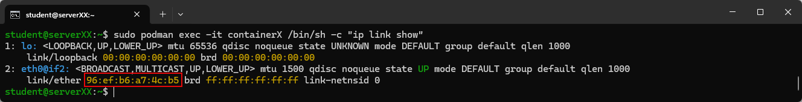
We checken nu het MAC-adres van containerX.
student@serverXX:~$ sudo podman exec -it containerX /bin/sh -c "ip link show"
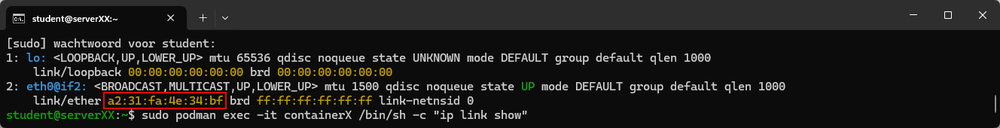
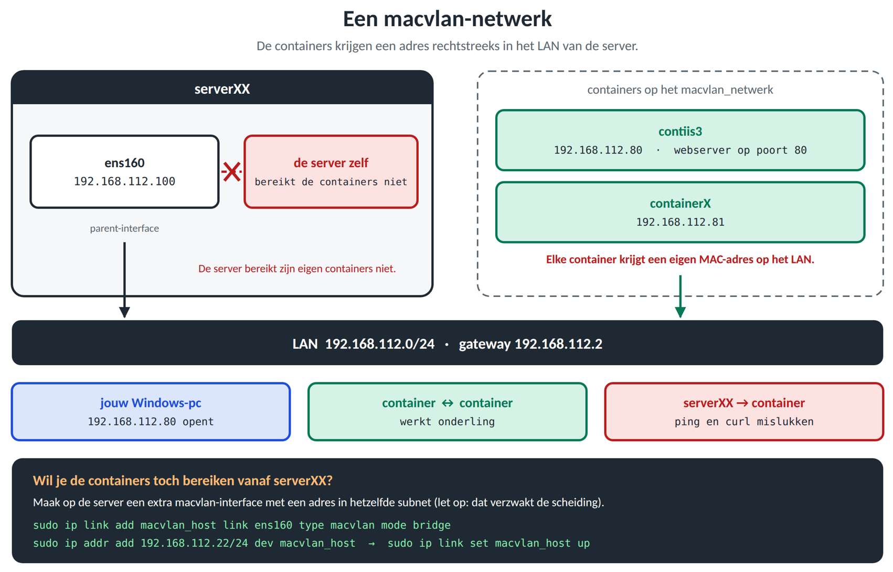
5.10 Ipvlan-netwerk¶
5.10.1 Inleiding¶
Een ipvlan-netwerk geeft containers een eigen IP-adres, maar deelt hetzelfde MAC-adres als de host. Dit is een belangrijk verschil met een macvlan-netwerk, waarbij elke container zijn eigen MAC-adres krijgt.
Een ipvlan-netwerk functioneert standaard op layer 2 (kan ook op layer 3, maar bespreken we niet) en biedt containers een IP-adres direct op het fysieke netwerk van de host. Dit type netwerk deelt het MAC-adres van de host met de containers, wat het beheer vereenvoudigt en ARP-problemen op het netwerk voorkomt die soms optreden bij macvlan-netwerken.
5.10.2 Ipvlan-netwerk aanmaken¶
We verwijderen eerst alle containers en netwerken.
student@serverXX:~$ podman rm --all -f; sudo podman rm --all -f
…
student@serverXX:~$ podman network prune; sudo podman network prune
WARNING! This will remove all networks not used by at least one container.
Are you sure you want to continue? [y/N] y
WARNING! This will remove all networks not used by at least one container.
Are you sure you want to continue? [y/N] y
We maken nu een ipvlan netwerk aan:
student@serverXX:~$ sudo podman network create -d ipvlan --subnet 192.168.112.0/24 --gateway 192.168.112.2 -o parent=ens160 ipvlan_netwerk
ipvlan_netwerk
Opgelet: sudo is nodig! Macvlan en ipvlan werken alleen rootful, omdat een rootless container geen toegang heeft tot de fysieke netwerkkaart van de server.
Nadat we terug verbinding hebben gemaakt zien we dat er een netwerk is bijgekomen.
student@serverXX:~$ sudo podman network ls
NETWORK ID NAME DRIVER
b78ca6671dbe ipvlan_netwerk ipvlan
2f259bab93aa podman bridge
5.10.3 Container met een ipvlan-netwerk¶
We starten een container die van dat netwerk gebruikmaakt. Kies een vrij adres dat niet door de DHCP-server wordt uitgedeeld.
student@serverXX:~$ sudo podman run --detach -it --name contiis4 --hostname contiis4 --network ipvlan_netwerk --ip 192.168.112.80 ubi10/ubi
5436fa022928ba4e4bafbe9d4c5411ce0e9d86bc19d7bfd7416501a294dbccdd
We gaan nu naar bash in de container.
student@serverXX:~$ sudo podman exec -it contiis4 bash
We bekijken het IP-adres, de routes en de DNS-instellingen.
[root@contiis4 /]# ip a
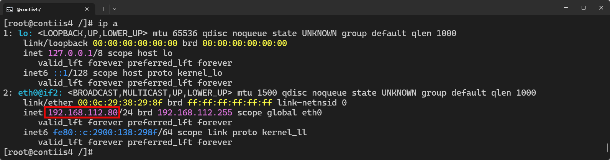
[root@contiis4 /]# ip route
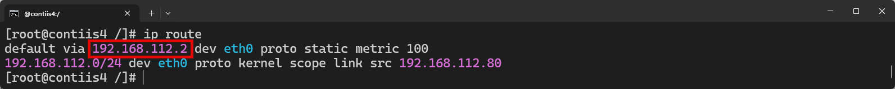
[root@contiis4 /]# cat /etc/resolv.conf
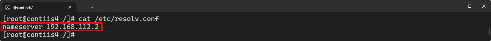
We testen de verbinding met het internet. Daarvoor installeren we eerst iputils.
[root@contiis4 /]# dnf install -y iputils
[root@contiis4 /]# ping -c 1 www.google.be
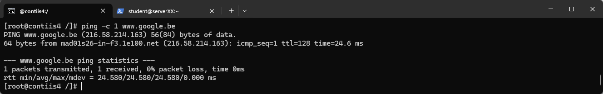
We installeren in de container een webserver.
[root@contiis4 /]# dnf install -y httpd
We starten httpd op, checken of die draait en verlaten de container.
[root@contiis4 /]# httpd
AH00558: httpd: Could not reliably determine the server's fully qualified domain name, using 192.168.112.80. Set the 'ServerName' directive globally to suppress this message
[root@contiis4 /]# curl 192.168.112.80
<!DOCTYPE html PUBLIC "-//W3C//DTD XHTML 1.1//EN" "http://www.w3.org/TR/xhtml11/DTD/xhtml11.dtd">
<html xmlns="http://www.w3.org/1999/xhtml" xml:lang="en">
…
[root@contiis4 /]# exit
exit
Ga naar je fysieke host (je Windows 10 of 11 computer dus) en je zal zien dat je de webpagina kan openen.
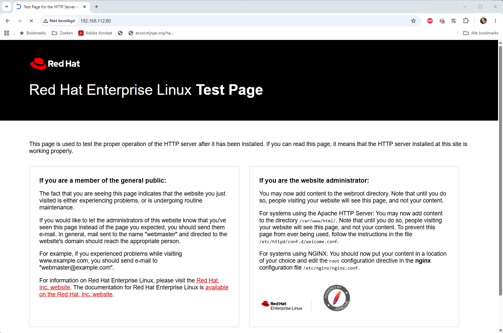
Containers in hetzelfde ipvlan-netwerk bereiken elkaar rechtstreeks. We starten er een tweede.
student@serverXX:~$ sudo podman run --detach -it --name containerY --hostname containerY --network ipvlan_netwerk --ip 192.168.112.81 ubi10/ubi
a2804a12387233cef67bfd1c2e3a5badfbfea7ef235bce4ca2bbc508ee796374
We gaan nu naar de tweede container.
student@serverXX:~$ sudo podman exec -it containerY bash
Installeer nu curl en vraag de webpagina op.
[root@containerY /]# dnf install -y curl
[root@containerY /]# curl http://192.168.112.80
<!DOCTYPE html PUBLIC "-//W3C//DTD XHTML 1.1//EN" "http://www.w3.org/TR/xhtml11/DTD/xhtml11.dtd">
<html xmlns="http://www.w3.org/1999/xhtml" xml:lang="en">
…
Verlaat nu de container.
[root@containerY /]# exit
exit
5.10.4 Scheiding met de host¶
Net als bij macvlan bereik je de container niet vanaf de server zelf. Een ipvlan-interface mag immers niet praten met de netwerkkaart waaraan ze vasthangt.
student@serverXX:~$ ping -c 1 192.168.112.80
PING 192.168.112.80 (192.168.112.80) 56(84) bytes of data.
From 192.168.112.100 icmp_seq=1 Destination Host Unreachable
--- 192.168.112.80 ping statistics ---
1 packets transmitted, 0 received, +1 errors, 100% packet loss, time 0ms
student@serverXX:~$ curl 192.168.112.80
curl: (7) Failed to connect to 192.168.112.80 port 80 after 3107 ms: Could not connect to server
Je kan ervoor zorgen (ook al is dat een beveiligingsrisico) dat de containerhost (contiis4) wel bereikbaar is vanaf de container met ipvlan door een ipvlan “Gateway” in te stellen.
Maak een nieuwe ipvlan-subinterface op de host:
student@serverXX:~$ sudo ip link add ipvlan_host link ens160 type ipvlan
Geef de nieuwe interface een IP-adres in hetzelfde subnet als het ipvlan-netwerk:
student@serverXX:~$ sudo ip addr add 192.168.112.22/24 dev ipvlan_host
Activeer nu de nieuwe interface.
student@serverXX:~$ sudo ip link set ipvlan_host up
Je SSH-verbinding valt nu weg. Dat komt doordat de nieuwe interface hetzelfde MAC-adres gebruikt als ens160: de kernel kan binnenkomende frames niet meer aan de juiste interface toewijzen. Dat is een nadeel van ipvlan in L2-mode. Wil je de containers wél vanaf de server bereiken, gebruik dan beter macvlan.
Werk verder in de console van de VM zelf. Daar kan je de webpagina nu wel opvragen.
student@serverXX:~$ curl http://192.168.112.80
<!DOCTYPE html PUBLIC "-//W3C//DTD XHTML 1.1//EN" "http://www.w3.org/TR/xhtml11/DTD/xhtml11.dtd">
<html xmlns="http://www.w3.org/1999/xhtml" xml:lang="en">
…
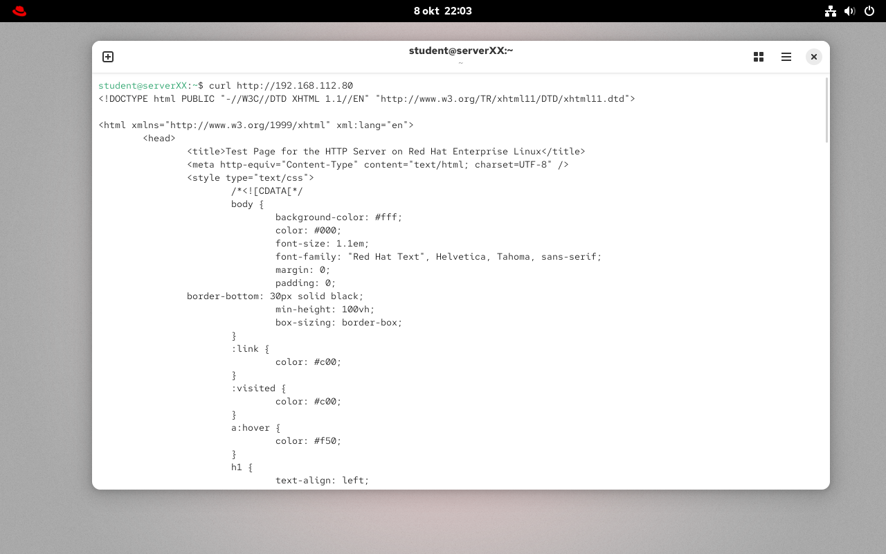
Je kan ook pingen naar de container.
student@serverXX:~$ ping -c 1 192.168.112.80
PING 192.168.112.80 (192.168.112.80) 56(84) bytes of data.
64 bytes from 192.168.112.80: icmp_seq=1 ttl=64 time=0.048 ms
--- 192.168.112.80 ping statistics ---
1 packets transmitted, 1 received, 0% packet loss, time 0ms
rtt min/avg/max/mdev = 0.048/0.048/0.048/0.000 ms
Verwijder de interface nadien weer, zodat je SSH-verbinding opnieuw werkt.
student@serverXX:~$ sudo ip link delete ipvlan_host
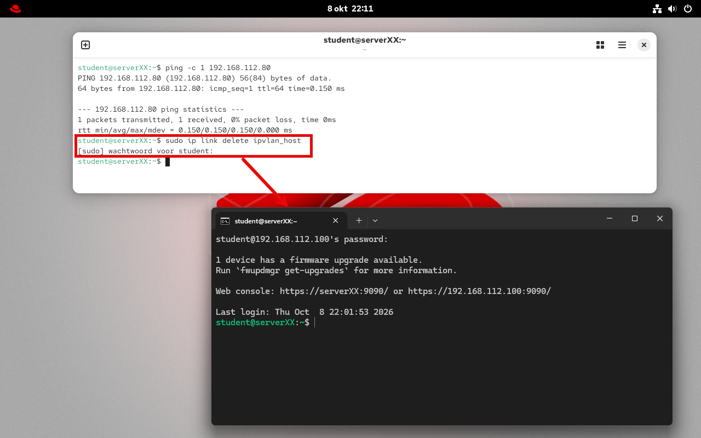
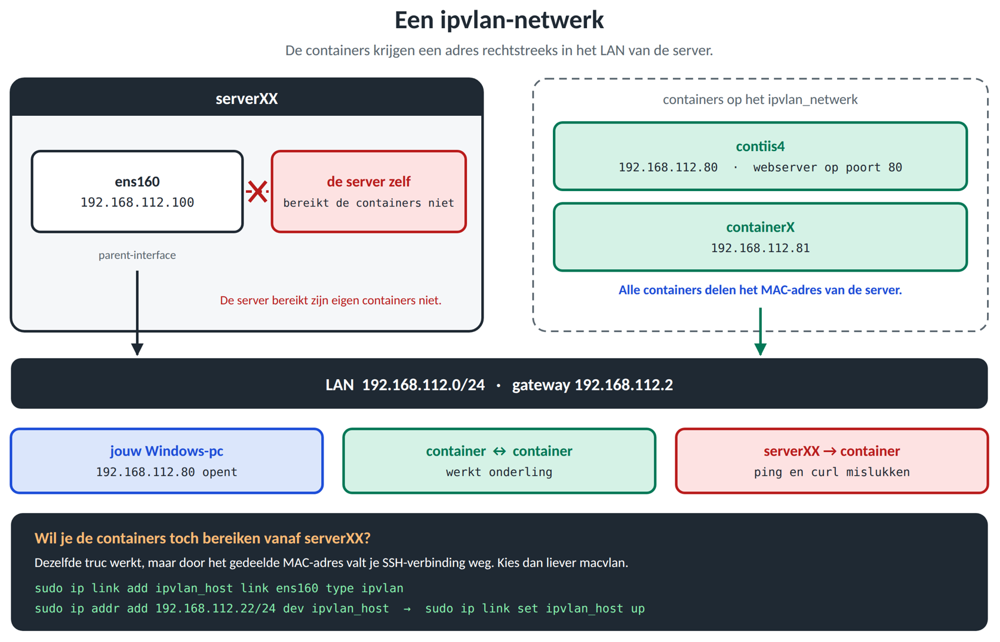
5.11 Uitgebreide vergelijking van de netwerkmodi in Podman¶
| Eigenschap | macvlan L2 | ipvlan L2 | bridge rootful | pasta rootless |
|---|---|---|---|---|
| MAC-adres per container | eigen MAC-adres | gedeeld met de host | niet zichtbaar op het LAN | niet zichtbaar op het LAN |
| IP-adres per container | uit het LAN-subnet | uit het LAN-subnet | uit een privésubnet, met NAT | geen eigen adres: dat van de host |
| Zichtbaar op het LAN | ja, als een echte machine | ja, maar alle via één MAC | nee, enkel via een gepubliceerde poort | nee, enkel via een gepubliceerde poort |
| Belasting van de switch | hoog, veel MAC-adressen | laag, één MAC-adres | geen, enkel de host is zichtbaar | geen, enkel de host is zichtbaar |
| Rechten nodig | root | root | root | geen root |
| Poorten onder 1024 | ja | ja | ja | nee |
| Bereikbaar vanaf de host | nee, extra macvlan-interface nodig | nee, extra ipvlan-interface nodig | ja, rechtstreeks op het adres van de container | enkel via een gepubliceerde poort |
| Geschikt voor | containers als volwaardige machines in het LAN | hetzelfde, maar zonder extra MAC-adressen | de klassieke opstelling, het meest gebruikt | veilig werken zonder root |
5.12 Lokale volumes koppelen aan containers¶
5.12.1 Inleiding¶
Er zijn verschillende methoden om volumes aan podman toe te wijzen:
-
Named volumes
-
Gecreëerd en beheerd door Docker of Podman.
-
Locaties kunnen variëren, afhankelijk van het besturingssysteem (en rootless of rootful).
-
Geschikt voor het opslaan van data die gedeeld moet worden door meerdere containers.
-
-
Bind mounts:
-
Hiermee kun je een specifieke directory op de host koppelen aan een directory in de container.
-
De locatie op de host moet expliciet worden opgegeven.
-
Gebruikt wanneer data op een specifieke locatie nodig is, zoals logbestanden.
-
-
tmpfs volumes:
-
Data wordt alleen in het geheugen opgeslagen (niet op schijf).
-
Geschikt voor data die alleen tijdens de runtime nodig is en na het afsluiten van de container wordt gewist.
-
-
Remote volumes
-
Podman ondersteunt direct mounts naar netwerk-filesystems.
-
CIFS en NFS worden in ieder geval ondersteund.
-
-
iSCSI-integratie
Maak verbinding met een iSCSI-target op de host en koppel het als block device of filesystem. Vervolgens kan de aangekoppelde directory of device via een bind-mount aan de container worden aangeboden. iSCSI wordt mogelijk later besproken.
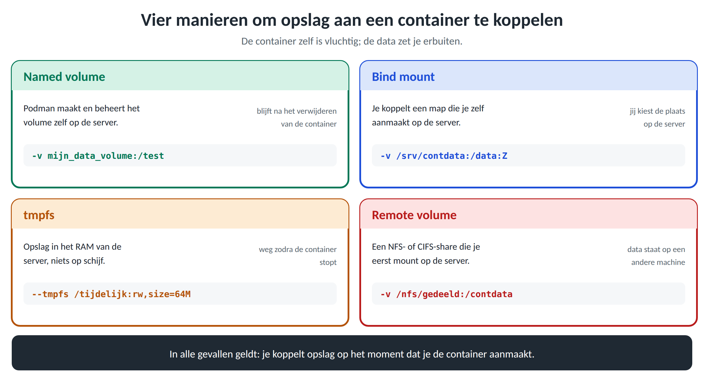
5.12.2 Stateless vs stateful¶
Het belangrijkste verschil tussen stateful en stateless applicaties is dat stateless applicaties geen gegevens "opslaan", terwijl stateful applicaties een vorm van opslag vereisen.
-
Stateless
Een stateless applicatie kan worden gecreëerd en verwijderd zonder dat er zorgen zijn over het behouden van gegevens. Je kunt de instantie eenvoudig opnieuw maken zonder dat dit gevolgen heeft voor de werking of configuratie. -
Stateful
Bij een stateful applicatie, zoals een SQL-installatie, is het behouden van de status cruciaal. Je wilt niet telkens de SQL-database opnieuw hoeven inrichten wanneer de container opnieuw wordt gestart. Dit is een situatie waarin het koppelen van een volume noodzakelijk is. Hiermee kunnen de gegevens van de SQL-installatie extern worden opgeslagen, zodat de container eenvoudig opnieuw kan worden gemaakt en opnieuw kan worden gekoppeld aan de bestaande data.
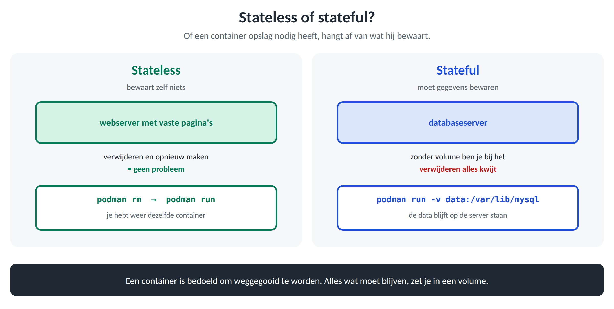
5.12.3 Named volume¶
We verwijderen eerst alle containers en netwerken.
student@serverXX:~$ podman rm --all -f; sudo podman rm --all -f
…
student@serverXX:~$ podman network prune; sudo podman network prune
WARNING! This will remove all networks not used by at least one container.
Are you sure you want to continue? [y/N] y
WARNING! This will remove all networks not used by at least one container.
Are you sure you want to continue? [y/N] y
De handmatig aangemaakte ipvlan_host-interface op ServerXX dien je ook nog te verwijderen.
student@serverXX:~$ sudo ip link delete ipvlan_host
Herstart nu sshd zodat sshd gebruik maakt van de nieuwe routeringsinstellingen.
student@serverXX:~$ sudo systemctl restart sshd
SSH werkt nu weer 😉.
Maak een volume aan genaamd `mijn_data_volume`:
student@serverXX:~$ podman volume create mijn_data_volume
mijn_data_volume
Deze stap is niet verplicht. Podman zal zelf het volume bij de volgende stap aanmaken als je deze stap niet hebt uitgevoerd.
Je kan wel een label toevoegen als je zelf eerst het volume aanmaakt.
student@serverXX:~$ podman volume create mijn_data_volume2 --label "project=my_project"
mijn_data_volume2
Labels kunnen handig zijn om volumes te onderscheiden.
Je kan via volume inspect de labels zien.
student@serverXX:~$ podman volume inspect mijn_data_volume2
Daarnaast zie je ook waar de data bewaard wordt op schijf: /home/student/.local/share/containers/storage/volumes/mijn_data_volume2/_data.
We starten nu een container en koppelen het volume aan een map binnen de container.
student@serverXX:~$ podman run -d --name conta -v mijn_data_volume:/test ubi10/ubi-init
In dit voorbeeld wordt de directory “/test” in de ubi10/ubi-container gekoppeld aan het volume “mijn_data_volume”. Dit betekent dat alle data die hier wordt opgeslagen, behouden blijft, zelfs als de container opnieuw wordt gemaakt.
We gaan in de container en zetten een bestand in /test.
student@serverXX:~$ podman exec -it conta bash
[root@3e43b082ac47 /]# echo "dit is een test" > /test/bestandtest.txt
We gaan nu uit de container en verwijderen de container.
[root@3e43b082ac47 /]# exit
exit
student@serverXX:~$ podman rm conta -f
conta
De data staat nog op ServerXX.
student@serverXX:~$ ls -l /home/student/.local/share/containers/storage/volumes/mijn_data_volume/_data
totaal 4
-rw-r--r--. 1 student student 16 10 sep 18:43 bestandtest.txt
We starten een nieuwe container op en koppelen mijn_data_volume aan deze nieuwe container.
student@serverXX:~$ podman run -d --name contb -v mijn_data_volume:/test ubi10/ubi-init
6804d22cb76a558784100970c39733b2d3c02d9ee078c5aa30477a0ff158f89f
We zullen nu vanuit deze nieuwe container de inhoud bekijken van /test/bestandtest.txt.
student@serverXX:~$ podman exec -it contb bash -c "cat /test/bestandtest.txt"
dit is een test
Zoals je ziet is vanuit container contb de data beschikbaar die aangemaakt is door container conta.
Je kan al je volumes als volgt bekijken.
student@serverXX:~$ podman volume ls
DRIVER VOLUME NAME
local mijn_data_volume
local mijn_data_volume2
Je kan enkel de volumenaam als volgt tonen.
student@serverXX:~$ podman volume ls -q
mijn_data_volume
mijn_data_volume2
Je kan hiervan gebruik maken om via command substitution alle volumes die niet door een container gebruikt worden tegelijk te verwijderen.
We stoppen dus eerst alle conta en contb.
student@serverXX:~$ podman rm contb -f
contb
We verwijderen nu alle volumes tegelijk.
student@serverXX:~$ podman volume rm $(podman volume ls -q)
mijn_data_volume
mijn_data_volume2
PS: Als je met sudo-rechten een volume creëert wordt de data op een andere locatie bewaard. Voor het overige is het principe hetzelfde. We verwijderen erna hier het volume.
student@serverXX:~$ sudo podman volume create mijn_data_volume3
student@serverXX:~$ sudo podman volume inspect mijn_data_volume3
student@serverXX:~$ sudo podman volume rm mijn_data_volume3
mijn_data_volume3
5.12.4 Bind mount¶
Bij een bind mount maak je eerst zelf een map aan op de container host en koppel je die bij het aanmaken van een container aan een map in de container.
We maken een map srv/contdata aan op ServerXX.
student@serverXX:~$ sudo mkdir -p /srv/contdata
We maken een tekstbestand data1.txt met als inhoud “Here is some data!” aan in de map /srv/contdata.
student@serverXX:~$ echo "Here is some data!" | sudo tee /srv/contdata/data1.txt
We maken nu een container aan met volume mapping.
student@serverXX:~$ sudo podman run -d --name cont1 --hostname cont1 -v /srv/contdata:/data:Z ubi10/ubi-init-v /srv/contdata:/data Volume mapping die een map op de host (
/srv/contdata) koppelt aan een map in de container (c:\data).:Z heeft te maken met SELinux op RHEL/Fedora/CentOS.
:Z = toegang voor deze container (dit wil je meestal).
:z = gedeelde toegang (als meerdere containers tegelijk dezelfde map mounten).
niets = Podman past het label niet aan, en de container krijgt Permission denied.
We gaan nu naar de container en starten bash.
student@serverXX:~$ sudo podman exec -it cont1 bash
We kijken nu of we dat data via de mapping kunnen benaderen.
[root@cont1 /]# ls /data/data1.txt
/data/data1.txt
We gaan nu content toevoegen aan data1.txt vanuit de container.
[root@cont1 /]# echo "Here is EXTRA data!" >> /data/data1.txt
We verlaten de container door exit in te typen.
[root@cont1 /]# exit
exit
We gaan de container die op de achtergrond uitgevoerd wordt stoppen.
student@serverXX:~$ sudo podman stop cont1
cont1
We gaan nu een nieuwe tweede container uitvoeren en zullen zien dat deze aan de data kan die juist is opgeslagen door cont1.
student@serverXX:~$ sudo podman run -d --name cont2 --hostname cont2 -v /srv/contdata:/data:z ubi10/ubi-init
We gaan nu via container cont2 de inhoud bekijken van /srv/contdata op ServerXX.
student@serverXX:~$ sudo podman exec -it cont2 /bin/sh -c "cat /data/data1.txt"
Here is some data!
Here is EXTRA data!
Eerst heeft cont1 inhoud toegevoegd aan /srv/contdata/data1.txt, daarna is cont1 afgesloten, is cont2 gestart en kan cont2 de inhoud bekijken van de data die opgeslagen is door cont1.
Cont2 kan uiteraard ook data toevoegen aan /srv/contdata/data1.txt op ServerXX.
student@serverXX:~$ sudo podman exec -it cont2 /bin/sh -c 'echo "Here is even more data!" >> /data/data1.txt'
We bekijken nu de data in het bestand /srv/contdata/data1.txt op ServerXX via cont1.
Start hiervoor eerst cont1 terug op.
student@serverXX:~$ sudo podman start cont1
Bekijk nu de inhoud van het bestand
student@serverXX:~$ sudo podman exec -it cont1 /bin/sh -c "cat /data/data1.txt"
Here is some data!
Here is EXTRA data!
Here is even more data!
Dit geeft je een idee van de mogelijkheden die deze verschillende containers hebben om met gedeelde gegevens te werken zodra deze is gekoppeld aan verschillende containers.
Het proces van het daadwerkelijk maken van die koppeling met het volume vindt plaats wanneer we de container aanmaken.
We moeten dit doen op het moment dat we de container starten, omdat dat de manier is waarop containers zijn ontworpen om te functioneren.
PS Je mag ook directories uit je eigen home-directory binden als je rootless podman wil gebruiken. Je kan geen directories binden waarvoor je geen permissies hebt. Je kan uiteraard chmod of ACL’s gebruiken om een gewone gebruiker toegang te geven tot een bepaalde directory. Buiten de rechten is het exact hetzelfde om te gebruiken.
5.12.5 tmpfs-volume¶
Een tmpfs volume heeft als eigenschap dat het niet beschikbaar is nadat een container is afgesloten.
Je voegt de --tmpfs-optie toe bij het aanmaken van een container om een tmpfs-volume te maken.
student@serverXX:~$ podman run --detach -i --name mijn_container --tmpfs /tijdelijk:rw,size=64M ubi10/ubi
948f2de74766e311d9e61fab968f11fdf69c466eb431c2264d1f3a700d61c576
--tmpfs /tijdelijk:rw,size=64M
Hiermee maak je een tijdelijk tmpfs-volume aan dat aan de map /tijdelijk in de container wordt gekoppeld. Dit werkt als volgt:/tijdelijk: De directory in de container waar het tmpfs-volume wordt gemount.
rw: Geeft lees- en schrijfrechten in dit tmpfs-volume.
size=64M: Bepaalt de maximale grootte van het tmpfs-volume op 64 MB. Het tmpfs-volume gebruikt het RAM-geheugen van de host voor deze opslag.
We gaan nu in de container en checken de grootte van /tijdelijk.
student@serverXX:~$ podman exec -it mijn_container bash
[root@948f2de74766 /]# df -h /tijdelijk
Filesystem Size Used Avail Use% Mounted on
tmpfs 64M 0 64M 0% /tijdelijk
We checken ook of we een bestand van 10MB kunnen aanmaken in /tijdelijk.
[root@948f2de74766 /]# dd if=/dev/zero of=/tijdelijk/testfile.img bs=10M count=1
1+0 records in
1+0 records out
10485760 bytes (10 MB, 10 MiB) copied, 0.0168512 s, 622 MB/s
We checken nu nog even de grootte van /tijdelijk
[root@948f2de74766 /]# df -h /tijdelijk
Filesystem Size Used Avail Use% Mounted on
tmpfs 64M 10M 54M 16% /tijdelijk
Zoals je ziet is nu 10MB opgebruikt.
We verlaten de container.
[root@948f2de74766 /]# exit
exit
De ruimte is nu terug vrijgegeven.
Je vraagt je waarschijnlijk af wat je daaraan hebt… Je kan tmpfs volumes o.a. gebruiken voor tijdelijke opslag in container (/tmp, cache, lockfiles) en voor veilige opslag (niets blijft over op schijf).
5.12.6 Remote volumes koppelen aan containers¶
We gaan dit concreet uitvoeren:
-
We maken een gedeelde map /srv/gedeeld met daarin een bestand data.txt aan op ClientXX.
-
We koppelen (mounten) de gedeelde map op ServerXX.
-
We maken een container cont3 aan en maken dat deze container toegang heeft tot de gedeelde share.
Maar we beginnen bij het begin… De gedeelde map aanmaken op ClientXX.
Download nfs-utils.
student@clientXX:~$ sudo dnf install -y nfs-utils
We maken nu de gedeelde map /srv/gedeeld aan.
student@clientXX:~$ sudo mkdir -p /srv/gedeeld
We zetten hierin een bestand data.txt.
student@clientXX:~$ echo 'Dit zijn gegevens' | sudo tee /srv/gedeeld/data.txt
Dit zijn gegevens
We zorgen er nu voor dat dit gedeeld wordt via NFS.
student@clientXX:~$ sudo nano /etc/exports
/srv/gedeeld 192.168.112.100(rw)
We starten nu de NFS server en zorgen er ook voor dat die gestart wordt na reboot.
student@clientXX:~$ sudo systemctl enable --now nfs-server
Created symlink '/etc/systemd/system/multi-user.target.wants/nfs-server.service' → '/usr/lib/systemd/system/nfs-server.service'.
We checken voor de zekerheid nu of de NFS-server draait.
student@clientXX:~$ systemctl status nfs-server
…
Active: active (exited) since Wed 2025-09-03 20:41:42 CEST; 34s ago
…
Deel nu de map met 192.168.112.100.
student@clientXX:~$ sudo exportfs -rav
exporting 192.168.112.100:/srv/gedeeld
Stel de firewall correct in voor NFS.
student@clientXX:~$ sudo firewall-cmd --zone=public --permanent --add-service=nfs
student@clientXX:~$ sudo systemctl restart firewalld
Op ServerXX mounten we nu de NFS-share.
We installeren hiervoor op ServerXX ook nfs-utils.
student@serverXX:~$ sudo dnf install -y nfs-utils
We maken een gedeelde map aan /nfs/gedeeld.
student@serverXX:~$ sudo mkdir -p /nfs/gedeeld
We zullen nu de share mounten.
student@serverXX:~$ sudo mount -t nfs 192.168.112.200:/srv/gedeeld /nfs/gedeeld
We starten nu een container op ServerXX om de toegang tot de share te bekijken.
student@serverXX:~$ sudo podman run -d --name contV --hostname contV -v /nfs/gedeeld:/contdata ubi10/ubi-init
We bekijken nu de gegevens.
student@serverXX:~$ sudo podman exec -it contV bash -c 'cat /contdata/data.txt'
Dit zijn gegevens
-l bij -lc zorgt ervoor dat een login shell wordt gestart (configuratiebestanden Bash worden zo geladen).
Zoals je ziet werkt dit.
Je kan nu wel geen gegevens wegschrijven in de container omdat de root standaard naar de gebruiker nobody wordt omgeleid bij NFS. Dit hebben jullie gezien bij de OLOD Linux Advanced.